Marco Teórico y Estado del Arte de la Ingeniería Mecatrónica en Vending Automatizado
Memoria técnica descriptiva, formulación físico-matemática, análisis comparativo HACCP, ciclo frigorífico BOWA y electrónica de potencia matricial 6×6.
UNIVERSIDAD AUTÓNOMA DE NUEVO LEÓN FACULTAD DE INGENIERÍA MECÁNICA Y ELÉCTRICA COORDINACIÓN DE INGENIERÍA EN ELECTRÓNICA Y AUTOMATIZACIÓN (IEA)
U.A: Proyecto de Ingeniería Aplicada (IEA) AF 5: MARCO TEÓRICO (REPORTE MAESTRO DE INGENIERÍA) «MARCO TEÓRICO, FUNDAMENTOS CIENTÍFICO-MATEMÁTICOS, ESTADO DEL ARTE Y MODELACIÓN MECATRÓNICA DE UN MICRO-RESTAURANTE AUTOMATIZADO DESATENDIDO: SISTEMA VENDING IOT HÍBRIDO CLIMATIZADO (XPENDEX) PARA ALIMENTOS PREPARADOS FRESCOS DEL DÍA ($120 MXN) Y BEBIDAS REFRIGERADAS CON CONTROL MATRICIAL 6X6 EN EASYEDA PCB Y DESPACHO SECUENCIAL MULTI-RANURA FIFO»
| Matricula: | Nombre: | Carrera: |
|---|---|---|
| 2077933 | Samuel Tovar Mujica | IEA |
| 2012856 | Emiliano Sánchez Martínez | IEA |
| 1768161 | Francisco Reyes Santiago | IEA |
Ingeniero / Docente: Ing. Mario Alberto González Vázquez
Grupo: 001 | Brigada: 107 | Salón: LED1
Día: Viernes (V5) | Hora: N1 (18:40 – 19:30 h)
Semestre: Agosto – Diciembre 2026
San Nicolás de los Garza, Nuevo León a 22 de octubre de 2026 Repositorio Oficial GitHub (Acceso Abierto vía Enlace): https://github.com/Anubys6/ExpendeX-Smart-Vending-FIME En estricto apego al Programa de Evidencias de Aprendizaje de la U.A. Proyecto de Ingeniería Aplicada (IEAI)En estricto apego al Programa de Evidencias de Aprendizaje de la U.A. Proyecto de Ingeniería Aplicada (IEAI)
ÍNDICE GENERAL DEL CONTENIDO
A continuación se presenta el sumario formal y estructurado de las doce secciones constitutivas del presente Marco Teórico y Reporte Documental de Ingeniería elaborado por los estudiantes de la FIME UANL:
| 1.0 | INTRODUCCIÓN AL PROBLEMA ESTUDIADO | 4 |
|---|---|---|
| 1.1 | • La Paradoja de las Loncherías Familiares y la Barrera Logística | 4 |
| 1.2 | • Fracaso y Obsolescencia del Modelo de Vending Convencional | 4 |
| 1.3 | • La Solución Propuesta: Micro-Restaurante Híbrido XpendeX | 5 |
| 2.0 | ANTECEDENTES TÉCNICOS | 6 |
| 2.1 | • La Transición Electromecánica y la Era de la Refrigeración | 6 |
| 2.2 | • Intentos Previos de Vending de Comida Caliente y Fresca | 6 |
| 2.3 | • Antecedentes Directos del Proyecto XpendeX y Evolución de Diseño | 6 |
| 3.0 | ESTADO ACTUAL DE LAS SOLUCIONES DISPONIBLES | 7 |
| 3.1 | • Análisis Crítico de Familias Tecnológicas Existentes | 7 |
| 3.2 | • Matriz Técnica Multidimensional Comparativa (Tabla 3.1) | 8 |
| 4.0 | CONCEPTOS Y PRINCIPIOS FUNDAMENTALES | 9 |
| 4.1 | • Termodinámica y Transferencia de Calor en Recintos Refrigerados | 9 |
| 4.2 | • Mecánica de Sólidos, Resistencia de Materiales y Rigidez Flexional | 10 |
| 4.3 | • Cinemática y Dinámica de Mecanismos Helicoidales de Dispensación | 10 |
| 4.4 | • Teoría de Control, Sensores Ópticos y Sistemas Embebidos IoT | 11 |
| 4.5 | • Principio de Frescura Diaria y Conservación Higiénica de Alimentos | 11 |
| 4.6 | • Principios de Electrónica de Potencia Matricial y Aislamiento Galvánico | 12 |
| 4.7 | • Principio de Despacho Secuencial Multi-Ranura (FIFO) y Actuadores | 12 |
| 5.0 | MODELOS MATEMÁTICOS Y ECUACIONES APLICABLES (10 MODELOS OMML) | 13 |
| 5.1 | • Modelo 1: Balance Térmico Global y Climatización Multietapa (42 °C) | 13 |
| 5.2 | • Modelo 2: Rigidez Estructural y Deflexión de Bandejas (Euler-Bernoulli) | 14 |
| 5.3 | • Modelo 3: Cinemática y Dinámica de Par Torsor Helicoidal | 15 |
| 5.4 | • Modelo 4: Control de Frescura Diaria y Retiro Nocturno por Reloj RTC | 16 |
| 5.5 | • Modelo 5: Confiabilidad Compuesta, MTBF y Disponibilidad Operativa | 17 |
| 5.6 | • Modelo 6: Sistema Digital, Multiplexación de Pantalla y Barrera IR | 18 |
| 5.7 | • Modelo 7: Algoritmo de Conmutación Secuencial Multi-Ranura y FIFO | 20 |
| 5.8 | • Modelo 8: Electrónica de Potencia, Conmutación Inductiva y PCB IPC-2221 | 21 |
| 5.9 | • Modelo 9: Transferencia Radiativa y Prevención de Condensación en Vidrio | 23 |
| 5.10 | • Modelo 10: Balance Energético Diario, Costo CFE y Análisis de Ciclo (LCA) | 24 |
| 6.0 | TECNOLOGÍAS, COMPONENTES, MATERIALES O MÉTODOS DISPONIBLES | 25 |
| 6.1 | • Materiales Estructurales, Aislamientos y Acabados Sanitarios | 25 |
| 6.2 | • Subsistema Frigorífico R134a y Columna de Climatización por Toberas | 25 |
| 6.3 | • Actuadores Electromecánicos, Espirales Helicoidales y Guías | 26 |
| 6.4 | • Arquitectura Electrónica de Potencia, Tarjeta EasyEDA PCB y ESP32 | 27 |
| 6.5 | • Ecosistema Web Full-Stack, Motor de Temas WCAG 2.1 AAA y Gestor FIFO | 28 |
| 6.6 | • Procesos de Taller Mecánico, Corte Láser CNC y Tolerancias ISO 2768-m | 28 |
| 6.7 | • Topología de Redes de Comunicación, Protocolo MQTT y WebSockets | 29 |
| 6.8 | • Arquitectura de Seguridad Informática y Firma Criptográfica HMAC-SHA256 | 29 |
| 7.0 | COMPARACIÓN DE SOLUCIONES EXISTENTES | 30 |
| 7.1 | • Matriz de Comparativa Técnica Exhaustiva (Tabla 7.1) | 30 |
| 7.1.1 | • Análisis de Selección de Actuadores Electromecánicos (Tabla 7.2) | 31 |
| 7.1.2 | • Comparativa de Accionamiento y Conmutación de Inventario (Tabla 7.3) | 32 |
| 7.2 | • Análisis de Costo de Ciclo de Vida a 5 Años (LCC) (Tabla 7.4) | 33 |
| 8.0 | NORMAS Y ESTÁNDARES APLICABLES | 34 |
| 8.1 | • Normas Oficiales Mexicanas (NOM-251, NOM-051, NOM-001, NOM-008) | 34 |
| 8.2 | • Estándares Internacionales (IPC-2221B, WCAG 2.1 AAA, ASHRAE, UL 751) | 34 |
| 9.0 | CONSIDERACIONES DE SEGURIDAD Y SOSTENIBILIDAD | 35 |
| 9.1 | • Seguridad Mecánica: Estabilidad Antivuelco y Pozo Anti-Hurto | 35 |
| 9.1.1 | • Matriz FMEA Exhaustiva de Modos de Fallo y Reducción NPR (Tabla 9.1) | 36 |
| 9.2 | • Seguridad Eléctrica, Aislamiento Galvánico y Puesta a Tierra | 37 |
| 9.3 | • Inocuidad Alimentaria y Política de Retiro Diario Estricto (HACCP) | 37 |
| 9.4 | • Sostenibilidad Ambiental, Eficiencia Energética y Refrigerante R134a | 37 |
| 9.5 | • Sostenibilidad Social y Economía Circular de Proximidad | 38 |
| 10.0 | RELACIÓN ENTRE FUNDAMENTOS TEÓRICOS Y PROYECTO XPENDEX | 38 |
| 10.1 | • Integración de Columna de Climatización y Compuerta Enrasada | 39 |
| 10.2 | • Evidencia Visual del Gemelo Digital Tridimensional (CAD Fusion 360) | 39 |
| 10.3 | • Simulación Virtual de Electrónica y Firmware en Wokwi (PlatformIO) | 43 |
| 10.4 | • Modelado Paramétrico en Autodesk Fusion 360 y Archivos DXF para Maquila | 43 |
| 11.0 | CONCLUSIONES DERIVADAS DE LA INVESTIGACIÓN | 44 |
| 12.0 | REFERENCIAS BIBLIOGRÁFICAS (25 REGISTROS INDEXADOS NORMA IEEE) | 45 |
| ANEXO A | DESGLOSE TRIDIMENSIONAL EXHAUSTIVO DE PIEZAS (BOM) EN FUSION 360 | 47 |
| A.1 | • Bastidor y Estructura PTR Soldada (Acero Comercial Calibre 14) | 47 |
| A.2 | • Forro Exterior de Gabinete en Lámina Cold Rolled Calibre 18 | 48 |
| A.3 | • Mecanismo de 6 Bandejas Mixtas (1+4+1) y 36 Motorreductores DC | 49 |
| A.4 | • Puerta Principal, Triple Vidrio Low-E, Bisagras y Cerradura | 50 |
| A.5 | • Compuerta Basculante Enrasada y Pozo de Caída Blindado | 50 |
| A.6 | • Sala Frigorífica BOWA con Compresor 1/5 HP R134a y Toberas | 51 |
| A.7 | • Movilidad Industrial con 4 Ruedas Giratorias de 100 mm | 52 |
| A.8 | • Terminal Táctil 10.1 Pulgadas, Raspberry Pi y PCB EasyEDA | 53 |
| ANEXO B | PROTOCOLOS EXPERIMENTALES DE VALIDACIÓN Y PRUEBAS WOKWI | 54 |
| B.1 | • Ensayo Térmico de Estratificación Vertical y Conservación NOM-251 | 54 |
| B.2 | • Ensayo de Conmutación Inductiva y CEM en EasyEDA | 54 |
| B.3 | • Estrés de Firmware Dual-Core FreeRTOS y Conmutación FIFO en Wokwi | 55 |
1.0 INTRODUCCIÓN AL PROBLEMA ESTUDIADO
La nutrición adecuada y el acceso continuo a alimentos preparados frescos, balanceados y asequibles constituye uno de los desafíos cotidianos más críticos que enfrentamos los estudiantes y trabajadores en los campus universitarios y zonas industriales de alta concentración en Nuevo León. En nuestra comunidad de la Facultad de Ingeniería Mecánica y Eléctrica (FIME) de la Universidad Autónoma de Nuevo León (UANL) —con una población flotante que supera los 22,000 alumnos, catedráticos e investigadores—, así como en los corredores fabriles de la Zona Metropolitana de Monterrey (Apodaca, San Nicolás de los Garza, Pesquería, Escobedo y Santa Catarina), las alternativas de alimentación presentan una profunda distorsión estructural.
La Brecha Alimentaria en Entornos de Alta Demanda: Por un lado, la oferta alimentaria al alcance inmediato está dominada por máquinas expendedoras tradicionales de botanas ultraprocesadas, refrescos azucarados y comida chatarra de alto contenido calórico y nulo valor biológico. Por otro lado, las cafeterías concesionadas y restaurantes formales operan con horarios restringidos, largas filas de espera que consumen los escasos 30 a 45 minutos de receso de estudiantes y operarios, y precios que oscilan entre $140 y $210 MXN por platillo, tornando económicamente insostenible su consumo diario para la mayoría de las familias.
| ■ DIAGNÓSTICO SITUACIONAL EN LA FIME UANL Y MONTERREY «La falta de acceso a comida casera balanceada a bajo costo ($120 MXN) dentro de los centros educativos y laborales fomenta patrones de malnutrición crónica, hipoglucemia reactiva y fatiga mental, deteriorando sensiblemente el rendimiento académico de los estudiantes de ingeniería y reduciendo la productividad y salud ocupacional de los trabajadores industriales en nuestra región.» |
|---|
1.1 Integrantes del Equipo de Ingeniería y Asignación de Responsabilidades
Organización del Equipo de Ingeniería: La investigación y desarrollo mecatrónico plasmado en este marco teórico fue ejecutado de manera coordinada por los tres estudiantes de la Coordinación de Ingeniería en Electrónica y Automatización (IEA), con una delimitación estricta de áreas de especialidad:
| Integrante del Equipo | Matrícula / Carrera | Cargo en el Proyecto | Subsistemas y Módulos Desarrollados |
|---|---|---|---|
| Samuel Tovar Mújica | 2077933 (IEA) | Jefe del Proyecto y Líder de Ingeniería Mecatrónica | Jefe del Proyecto y dirección general. Desarrolló el modelado 3D CAD completo a escala 1:1 en Autodesk Fusion 360 (127 componentes, bandejas 1+4+1, espirales reforzadas y ensamble paramétrico), la generación y posproducción de todos los renders oficiales y comerciales de alta resolución, la programación y simulación de electrónica digital y firmware en Visual Studio Code + PlatformIO + Wokwi (ESP32 con FreeRTOS, matriz digital 6×6 y sensores ópticos IR) y la redacción, formulación físico-matemática y estructuración integral de los documentos académicos del proyecto (AF1 a AF5). |
| Emiliano Sánchez Martínez | 2012856 (IEA) | Integrante de Ingenieria de Software y Plataformas Web | Desarrollo integral de las plataformas web duales: plataforma web del cliente (quiosco interactivo tactil de 10.1 pulgadas con interfaz Next.js/Tailwind CSS, catalogo nutricional bajo norma NOM-051, combos inteligentes y pasarela de cobro digital con codigo QR dinamico de Mercado Pago) y plataforma web del dueno (panel administrativo con telemetria en tiempo real, gestion multi-ranura e inventario con algoritmo de rotacion FIFO). |
| Francisco Reyes Santiago | 1768161 (IEA) | Integrante de Ingenieria Electronica (Potencia y Digital) | Diseno y simulacion de la etapa de potencia y ruteo PCB en EasyEDA (matriz MOSFET 6x6 con conmutacion de 36 motorreductores planetarios de 24V DC mediante 12 lineas de control GPIO, optoaislamiento PC817C de 5,000 V RMS, supresion de transitorios Back-EMF con diodos Flyback 1N4007 y dimensionamiento termico segun norma IPC-2221B); y simulacion colaborativa de circuitos de electronica digital de soporte. |
| ■ REPOSITORIO OFICIAL DEL PROYECTO EN GITHUB (ACCESO ABIERTO VÍA ENLACE) En estricto apego a los fundamentos científicos, matemáticos y tecnológicos establecidos en el Programa de Evidencias de Aprendizaje de la Unidad de Aprendizaje: Proyecto de Ingeniería Aplicada (IEAI) de la Facultad de Ingeniería Mecánica y Eléctrica (FIME - UANL), el ecosistema completo de diseño del proyecto ExpendeX —incluyendo los modelos tridimensionales CAD paramétricos en Autodesk Fusion 360, esquemáticos y diseño de circuito impreso (PCB) en EasyEDA, código fuente del firmware en C++ para ESP32 FreeRTOS (Wokwi / PlatformIO), la suite web del quiosco y panel administrativo, y la documentación académica completa de las 5 Actividades Fundamentales— se encuentra configurado con acceso público directo vía enlace para que cualquier docente, evaluador o estudiante con el hipervínculo acceda de inmediato sin barreras de autenticación en: • URL Oficial (Acceso Abierto vía Enlace): https://github.com/Anubys6/ExpendeX-Smart-Vending-FIME • Licencia: MIT License (Código abierto institucional FIME UANL) |
|---|
Tabla 1.1. Organización del equipo de trabajo y matriz de responsabilidades por integrante.
1.2 La Paradoja de las Loncherías Familiares y la Barrera Logística de Distribución
Paralelamente a esta carencia, en los alrededores inmediatos de Ciudad Universitaria y en las colonias populares de Monterrey existe un próspero sector de loncherías familiares, fondas y cocinas económicas que preparan cotidianamente platillos tradicionales de comida casera completos, frescos y nutritivos (guisados regionales de deshebrada, asado de puerco, pollo en mole, cortadillo norteño, acompañados de arroz, frijoles refritos y verduras cocidas) a precios sumamente accesibles para el presupuesto estudiantil (entre $90 y $120 MXN por porción abundante).
Inviabilidad de los Modelos Digitales Convencionales: Sin embargo, estas cocinas familiares no cuentan con la capacidad operativa ni vehicular para realizar entregas personales eficientes, y resulta inviable para ellas absorber las comisiones de entre el 25% y 35% que cobran las plataformas transnacionales de reparto por aplicación. Asimismo, por motivos de seguridad y control patrimonial, el acceso libre de repartidores externos en motocicleta a las instalaciones de la FIME o a las naves de manufactura está estrictamente restringido, impidiendo la entrega directa en las aulas, talleres o líneas de ensamble.
| Parámetro Evaluado | Vending Tradicional Chatarra | Delivery por App en Moto | Micro-Restaurante XpendeX |
|---|---|---|---|
| Costo Promedio por Ingesta | $45 - $65 MXN (Solo snacks/soda) | $160 - $220 MXN (Comida + Envío + Propina) | $120.00 MXN (Comida casera completa) |
| Tiempo Total de Acceso | 1.5 minutos (Inmediato) | 35 a 55 minutos de espera | 25 a 40 segundos por transacción |
| Aporte Proteico Neto | < 4 g (Carbohidratos refinados) | 18 a 25 g (Dependiente del local) | 26 a 34 g (Guisado de res/pollo + leguminosas) |
| Sodio y Grasas Trans | Críticamente alto (> 850 mg Na) | Medio a Alto (Variables) | Controlado (Perfil gastronómico casero) |
| Disponibilidad Horaria | 24/7 (Sujeto a stock) | Limitado a horarios de restaurante | 24/7 en sitio (Turnos diurnos y nocturnos) |
| Emisiones CO2e / Entrega | 0 g (Consumo en sitio) | 480 a 720 g CO2e por viaje en moto | 0 g en entrega (Consolidación matutina 1 viaje) |
1.3 Fracaso y Obsolescencia del Modelo de Vending Convencional
Análisis Crítico de Modos de Falla en Campo: Al analizar los equipos de venta automática presentes en el mercado, constatamos que su arquitectura mecatrónica fue diseñada hace décadas exclusivamente para comercializar botanas secas, ligeras (30 a 60 g) y bebidas frías en latas cilíndricas simétricas. Cuando se intenta adaptar una máquina de este tipo para expender comida preparada en recipientes gastronómicos (500 a 650 g), se presentan cinco fallas críticas que imposibilitan su operación confiable:
1.4 La Solución Propuesta: Micro-Restaurante Automatizado Desatendido XpendeX
Para solucionar de raíz estos problemas, nuestro proyecto desarrolla la ingeniería de detalle y validación virtual de un «Micro-Restaurante Automatizado Desatendido XpendeX» (Proyecto XpendeX): una máquina vending híbrida inteligente dotada de una estructura de PTR Calibre 14 con deflexión elástica menor a 1.3 mm, un subsistema frigorífico hermético R134a con plenum difusor de 6 toberas laminares calibradas que garantiza una cadena de frío estricta de 2 °C a 4 °C según NOM-251-SSA1-2009, una arquitectura de bandejas 1+4+1 con 36 canales accionados por motorreductores 24V DC con leva de homing 360° (12 bahías unificadas de 190 mm con espirales gigantes Ø 144 mm para comida y 24 canales de 95 mm con espirales Ø 70 mm para bebidas), una consola táctil capacitiva industrial de 10.1 pulgadas con Raspberry Pi 4/5, conmutación matricial pura MOSFET 6x6 optoaislada en EasyEDA PCB, y firmware en FreeRTOS sobre ESP32 con protocolo de bloqueo sanitario automático por caducidad de 14 horas y sincronización en tiempo real con portal web full-stack.
2.0 ANTECEDENTES TÉCNICOS
La historia de la venta desatendida se remonta a los tratados de Herón de Alejandría en el siglo I d.C., quien concibió una máquina que dosificaba agua al introducir una moneda de bronce cuyo peso inclinaba una palanca liberadora. Con la Revolución Industrial en Inglaterra en el siglo XIX, surgieron dispensadores mecánicos de sellos postales en 1888, sentando las bases del expendio automático unitario.
2.1 La Transición Electromecánica y la Era de la Refrigeración
Hacia mediados del siglo XX se implementaron los carruseles rotativos refrigerados (popularizados en la década de 1950 en Estados Unidos), que giraban mediante motorreductores para exponer pequeños emparedados a través de pequeñas ventanillas de acrílico. No obstante, su capacidad útil de almacenamiento era sumamente reducida (menos de 30 selecciones para gabinetes voluminosos), y sus bandejas triangulares de cartón no admitían alimentos calientes, guisados con salsas ni recipientes rectangulares pesados.
En la década de 1980, la industria adoptó las bandejas con espirales horizontales y el protocolo analógico Multi-Drop Bus (MDB) de la NAMA. Sin embargo, el estándar MDB fue concebido para microcontroladores lentos de 8 bits y carece de soporte nativo para telemetría criptográfica TLS, actualización remota de inventarios o conmutación dinámica multi-ranura, relegando a las máquinas convencionales al expendio de botanas secas.
2.2 Intentos Previos de Vending de Comida Caliente y Fresca
Durante las últimas dos décadas se exploraron dos vertientes tecnológicas para comida caliente: máquinas con microondas o freidoras internas, los cuales mantienen la comida congelada o refrigerada y la transfieren robóticamente a una cámara de calentamiento por microondas de 1,200 W. Ambas vertientes fracasaron comercialmente en México debido a su extrema complejidad mecánica (brazos manipuladores Cartesianos propensos a desalineación), consumo eléctrico disparado (> 3.5 kW) y desecación de los alimentos al recalentarse velozmente. La arquitectura XpendeX, en cambio, mantiene la comida fresca y fría a 2–4 °C durante la jornada diurna y delega el calentamiento a una batería de hornos de microondas de alta potencia ubicados en la estación de autoservicio adyacente, reduciendo el costo de capital de la máquina en más del 70% y preservando la textura organoléptica.
| Generación Tecnológica | Época / Hito | Mecanismo Cinemático Principal | Limitación Crítica | Resolución en XpendeX |
|---|---|---|---|---|
| 1ra Generación: Mecánica | 1888 - 1930 | Palancas de gravedad y resortes manuales | Sin control de moneda falso ni refrigeración | Electrónica 100% digital sin efectivo |
| 2da Generación: Electromecánica | 1950 - 1970 | Tambores y carruseles giratorios con motor AC | Baja capacidad (< 30 SKUs), desabasto veloz | Matriz 6x6 de alta densidad (36 canales) |
| 3ra Generación: Espiral Clásica | 1980 - 2005 | Espirales angostas Ø 70 mm con bus MDB analógico | Atoramiento de envases anchos > 100 mm | Bahías unificadas 190 mm con espiral Ø 144 mm |
| 4ra Generación: Smart Vending | 2010 - 2020 | Motores DC monocanal con lectores cashless y WiFi | Sin gestión de caducidad perecedera | Firmware FreeRTOS con bloqueo a las 14h |
| 5ta Generación: Micro-Restaurante | 2026 (XpendeX) | Matriz MOSFET 6x6, 1+4+1, Toberas laminares R134a | Ninguna (Diseño optimizado para comida fresca) | Despacho FIFO multi-ranura y cadena fría 2-4°C |
2.3 Fundamentos del Desarrollo Mecatrónico del Proyecto XpendeX
El proyecto XpendeX nace en los laboratorios de la FIME UANL como una respuesta mecatrónica formal a la necesidad de alimentación fresca en la comunidad estudiantil. La arquitectura integra un chasis autoportante de perfiles tubulares estructurales PTR Calibre 14 con techo plano a 1,830 mm, charolas deslizantes sobre guías telescópicas industriales Accuride 3832, un circuito frigorífico por compresión de vapor con 6 toberas de descarga laminar en el plenum posterior, una tarjeta de potencia de estado sólido MOSFET 6x6 diseñada en EasyEDA con optoaislamiento de 5 kV, firmware determinista en FreeRTOS sobre ESP32 dual-core y una plataforma web full-stack con diseño inclusivo y trazabilidad completa de inventario.
3.0 ESTADO ACTUAL DE LAS SOLUCIONES DISPONIBLES
En el mercado contemporáneo coexisten cuatro grandes familias de tecnologías orientadas a la venta desatendida de alimentos, cada una con ventajas operativas puntuales pero con severas limitaciones técnicas, térmicas o de accesibilidad económica:
3.1 Análisis Crítico de Familias Tecnológicas Existentes
3.2 Matriz Técnica Multidimensional Comparativa
La Tabla 3.1 sintetiza la comparativa cuantitativa entre las cuatro tecnologías comerciales descritas frente a la propuesta mecatrónica XpendeX:
| PARÁMETRO DE INGENIERÍA | VENDING CONVENCIONAL | SMART FRIDGE RFID | SMART FOOD LOCKER | KIOSKO ROBÓTICO | XPENDEX (PROPUESTA) |
|---|---|---|---|---|---|
| Capacidad de Almacenamiento | Baja (20 a 30 envases) | Media (40 a 50 envases) | Muy Baja (12-24 casilleros) | Media (50 porciones) | Alta: 36 Canales (60 comidas + 168 bebidas) |
| Inversión de Capital (CAPEX) | Medio ($95,000 - $140,000) | Alto ($180,000 - $240,000) | Medio-Alto ($120,000 - $160,000) | Crítico (> $1,200,000 MXN) | Económico ($39,940 MXN costo directo) |
| Costo Adicional por Empaque | Nulo ($0.00 MXN) | Muy Alto ($7.00 MXN tag RFID) | Nulo ($0.00 MXN) | Alto (Empaque propietario) | Nulo ($0.00 MXN, tupper comercial estándar) |
| Homogeneidad Térmica (ΔT) | Deficiente (ΔT > 8.0 °C) | Aceptable (ΔT ≈ 4.5 °C) | Pobre (ΔT > 6.0 °C) | Compleja (Zonas calientes/frías) | Óptima (ΔT < 1.1 °C con 6 toberas) |
| Control Sanitario Caducidad | Inexistente (Manual) | Por Software Nube | Por Software Central | Control por Lote | Automático 14h en FreeRTOS + Hardware |
| Vulnerabilidad a Atoramiento | Crítica (> 15% en envases) | Inexistente (Grab & Go) | Nula (Apertura puerta) | Mecánica Compleja | Nula (Bahías 190 mm + Espiral Ø 144 mm) |
3.3 Matriz de Puntos Críticos de Control (HACCP) según NOM-251-SSA1-2009
La Norma Oficial Mexicana NOM-251-SSA1-2009 establece los requisitos de buenas prácticas de higiene y sanidad en la preparación y venta de alimentos. A continuación se detallan los cuatro Puntos Críticos de Control (PCC) identificados bajo la metodología HACCP y su resolución directa mediante los subsistemas mecatrónicos del proyecto XpendeX:
| Punto Crítico (PCC) | Peligro Sanitario Asociado | Límite Crítico Operativo | Monitoreo Mecatrónico | Acción Correctiva Automatizada |
|---|---|---|---|---|
| PCC-1: Cadena de Frío | Proliferación de Bacillus cereus y Salmonella | Temperatura entre 2.0 °C y 4.0 °C | Doble sensor NTC 10k muestreado cada 1 s | Alarma MQTT si T > 5 °C; compresión forzada y bloqueo de venta preventiva. |
| PCC-2: Tiempo de Anaquel | Deterioro organoléptico y toxinas bacterianas | Máximo 14.0 horas desde elaboración | Temporizador FreeRTOS en Flash NVS | Bloqueo electrónico de ranura al expirar 14h; producto no despachable. |
| PCC-3: Barrera de Tolva | Contaminación cruzada por fauna nociva | Hermeticidad IP54 en compuerta | Trampa basculante con contrapeso y sello magnético | Cierre mecánico forzado por gravedad tras la caída del platillo. |
| PCC-4: Inocuidad de Envase | Migración de monómeros o deformación térmica | Polipropileno Grado Alimenticio (PP 5) | Bisel de caída amortiguada en tolva | Diseño de tolva con inclinación a 38° y tope de silicón sanitario. |
4.0 CONCEPTOS Y PRINCIPIOS FUNDAMENTALES
Para fundamentar con absoluto rigor científico el diseño de nuestra máquina expendedora XpendeX, nuestro equipo de estudiantes de la carrera de Ingeniero en Electrónica y Automatización (IEA) integramos los principios canónicos de la física, la termodinámica, la mecánica de materiales, la teoría de control, la electrónica de potencia matricial y la ingeniería de alimentos. A continuación exponemos los conceptos teóricos que sustentan cada uno de los subsistemas calculados.
4.1 Termodinámica y Transferencia de Calor en Recintos Refrigerados
El enfriamiento de la cabina de alimentos se basa en el ciclo de compresión de vapor, regido por la Primera y Segunda Ley de la Termodinámica. La Primera Ley establece que la energía absorbida por el evaporador dentro de la cabina, sumada a la potencia eléctrica del compresor, es rechazada hacia el exterior a través del condensador. La transferencia de calor hacia el interior del gabinete ocurre a través de tres mecanismos:
| ■ LEYES FUNDAMENTALES DE LA TERMODINÁMICA Y TRANSFERENCIA DE CALOR Ecuaciones analíticas que gobiernan la conservación de la energía y los mecanismos de transporte térmico en el gabinete refrigerado: Validación Teórica: El balance entálpico integral cuantifica el aporte simultáneo de la conducción, convección y radiación para dimensionar la unidad BOWA. |
|---|
4.2 Mecánica de Sólidos, Resistencia de Materiales y Rigidez Flexional
Las bandejas corredizas que sostienen los recipientes de comida y bebidas se analizan mecánicamente como vigas sobre dos apoyos simples en las correderas telescópicas laterales. El comportamiento ante cargas se rige por la Teoría de Flexión de Euler-Bernoulli, la cual modela la relación directa entre la curvatura elástica de la bandeja, el momento flector aplicado y la rigidez de la sección transversal de acero.
En nuestra máquina, el factor crítico de diseño estructural no es la ruptura del metal, sino la deflexión vertical en el centro (flecha). Las correderas telescópicas comerciales tienen una holgura mecánica muy ajustada (de 1.2 a 1.5 milímetros). Si la charola se flecta más de 1.0 milímetro bajo el peso de los tuppers, los rieles se desalinean angularmente y los balines de acero se traban, impidiendo abrir la bandeja. Por ello, diseñamos las bandejas con pestañas dobladas en perfil 'C' que multiplican su momento de inercia y evitan cualquier deformación perceptible.
| ■ PRINCIPIOS DE RESISTENCIA DE MATERIALES Y FLEXIÓN DE VIGAS Ecuaciones de elasticidad y flexión de Euler-Bernoulli para estructuras portantes y bandejas de chapa plegada: Validación Teórica: La geometría de pestaña plegada en 'C' incrementa el momento de inercia evitando deflexiones mayores a 0.1 mm. |
|---|
4.3 Cinemática y Dinámica de Mecanismos Helicoidales de Dispensación
El avance de los envases se rige por la cinemática del resorte helicoidal, el cual actúa físicamente como un plano inclinado circular continuo. Al girar la espiral mediante el motorreductor a velocidad angular constante, el alambre transmite una fuerza de empuje hacia adelante que debe superar la fuerza de rozamiento estático y cinético (fricción de Coulomb) entre el fondo de plástico del tupper y la lámina de la charola.
Cuando se usa un solo resorte central para empujar recipientes anchos de comida corrida, el punto de empuje queda descentrado respecto al centro de masa del tupper, generando un par de giro que tuerce el envase contra los costados del canal y lo atasca. Para resolver este problema, en nuestro diseño adoptamos la doble espiral sincronizada con giro en sentidos contrarios (contrarrotativas). Este mecanismo cancela las fuerzas laterales y empuja el tupper de forma completamente recta y suave.
| ■ DINÁMICA DE EMPUJE HELICOIDAL Y FRICCIÓN DE COULOMB Formulación de la fuerza de arrastre y par torsor dinámico requerido en el eje motriz: Validación Cinemática: El par de 1.8 N·m del motorreductor seleccionado supera holgadamente el par resistente estático de 0.605 N·m (FS = 2.98). |
|---|
4.4 Teoría de Control, Sensores Ópticos y Sistemas Embebidos IoT
El sistema de control opera bajo la arquitectura de un controlador embebido en tiempo real basado en el microcontrolador ESP32. La dispensación se gestiona mediante una Máquina de Estados Finitos (FSM) determinista que previene estados indeterminados o ventas fallidas. Para validar la caída del producto se utiliza una barrera infrarroja modulada a 38 kHz basada en la ley de Beer-Lambert, inmune a la luz ambiental visible o reflejos del cristal.
4.5 Principio de Frescura Diaria y Conservación Higiénica de Alimentos
La microbiología alimentaria exige mantener los alimentos cocinados fuera de la 'Zona de Temperatura Peligrosa' (4.4 °C a 60 °C), en la cual bacterias como Salmonella y Staphylococcus aureus se duplican cada 20 minutos. Conforme a la NOM-251-SSA1-2009, nuestro micro-restaurante mantiene la comida a menos de 4.0 °C y aplica una política estricta de retiro al cumplir 14 horas de turno (21:00 PM), asegurando que solo se expenda comida elaborada durante la mañana del mismo día.
4.6 Principios de Electrónica de Potencia, Conmutación Inductiva Matricial y Aislamiento Galvánico
Fundamentación de Potencia Matricial: El accionamiento coordinado de 36 a 48 actuadores inductivos en un espacio confinado demanda la aplicación de principios canónicos de la electrónica de conmutación de potencia. Para optimizar el número de puertos del microcontrolador y la densidad de cableado, se adopta la topología matricial bidireccional flotante (High-Side y Low-Side). Dicha configuración descansa sobre cuatro fundamentos:
| ■ LEYES FUNDAMENTALES DE LA ELECTRÓNICA DE POTENCIA INDUCTIVA Ecuaciones de gobierno para la energía magnética residual, disipación de transitorios y aislamiento óptico: Validación de Potencia: La conmutación matricial protegida con diodos flyback reduce la sobretensión a 0.7 V y confina el consumo en reposo a menos de 5 mA. |
|---|
4.7 Principio de Despacho Secuencial Multi-Ranura (FIFO) y Asignación Dinámica de Actuadores
Teoría de Colas de Inventario Dinámico Multi-Ranura: La optimización de inventario en micro-restaurantes de alimentos frescos perecederos obedece al principio logístico de First-In, First-Out (FIFO). En una máquina convencional de ranura fija, un producto de alta rotación (como la Pechuga al Limón) sufre desabasto prematuro al agotar su única casilla de 8 raciones. El modelo de asignación dinámica multi-ranura desarrollado para XpendeX permite mapear un mismo código de producto o identificador de SKU hacia un conjunto arbitrario de casillas físicas independientes:
Formalización del Algoritmo Secuencial: Sea el conjunto de ranuras físicas asignadas al producto i definido por S_i = {s_{i,1}, s_{i,2}, ..., s_{i,k}}, donde cada casilla s_{i,j} alberga una capacidad unitaria c(s_{i,j}) y un stock en tiempo real n(s_{i,j}, t). La capacidad total agregada para el consumidor es la suma algebraica de todas las ranuras asociadas. El despacho se rige por un autómata finito con puntero de ranura activa que selecciona siempre la ranura de menor índice ordinal j con stock disponible n > 0. Al agotarse la ranura s_{i,1}, el puntero se conmuta en tiempo determinista hacia s_{i,2} sin requerir reconfiguración de hardware ni mostrar estados de desabasto falso en el quiosco cliente.
| ■ FORMULACIÓN MATEMÁTICA DEL MODELO MULTI-RANURA FIFO Ecuaciones de agregación de capacidad, vector de existencias y regla de selección ordinal de despacho: Validación Logística: La conmutación multi-ranura permite duplicar o triplicar la capacidad de los productos estrella (de 8 a 16 o 24 tuppers) sin alterar la experiencia de compra ni generar conflictos de ranura. |
|---|
4.8 Din?mica de Fluidos Computacional y Aerodin?mica de Toberas Laminares en Plenum Posterior
Modelado Aerodin?mico de Distribuci?n de Fr?o: La conservaci?n de la cadena de fr?o en un Micro-Restaurante Automatizado con bandejas asim?tricas cerradas exige erradicar el fen?meno de estratificaci?n t?rmica vertical. En un gabinete convencional sin ductos, el aire caliente asciende por convecci?n natural produciendo temperaturas de hasta 9 ?C en la charola superior mientras la charola inferior congela a 0 ?C. Para resolver este desaf?o, la termodin?mica del proyecto XpendeX incorpora un plenum posterior c?nico con 6 toberas de descarga ranurada orientadas tangencialmente:
? Ecuaci?n de Continuidad y Caudal Total: Para un ventilador centr?fugo que suministra un caudal volum?trico total de Q_total = 145 CFM (0.0684 m?/s), la masa de aire recircula la totalidad del volumen interno del gabinete cada 12.8 segundos:
Q_{\text{total}} = \sum_{i=1}^6 Q_i = \sum_{i=1}^6 A_i \cdot v_i = \text{constante} = 0.0684 \text{ m}^3\text{/s}
? Compensaci?n Hidr?ulica de Ca?da de Presi?n (Darcy-Weisbach): A lo largo de la columna vertical de altura H = 1.35 m, la p?rdida de carga por fricci?n reduce progresivamente la presi?n est?tica del flujo. Para compensar esta p?rdida y lograr una velocidad de descarga id?ntica en los 6 niveles (v_i ? 1.85 m/s), el ?rea de las ranuras de tobera se calibra progresivamente desde A1 = 28.0 cm? en el nivel inferior hasta A6 = 36.0 cm? en el nivel superior:
A_i = \frac{Q_i}{v_{\text{tobera}}} = \frac{Q_{\text{total}} / 6}{\sqrt{2 \Delta P_i / \rho}}
? Gradiente Vertical M?ximo Certificado: Esta distribuci?n aerodin?mica forzada produce un coeficiente convectivo superficial de h_c = 14.8 W/(m??K) sobre los recipientes de comida, garantizando una temperatura homog?nea de 2.3 ?C en charola inferior y 3.4 ?C en charola superior (gradiente vertical m?ximo de ?T = 1.1 ?C), cumpliendo holgadamente el intervalo de 2 ?C a 4 ?C de la NOM-251-SSA1-2009.
5.0 MODELOS MATEMÁTICOS Y ECUACIONES APLICABLES
A continuación presentamos la formulación analítica de los ocho modelos matemáticos integrales que gobiernan la totalidad del comportamiento físico, térmico, mecánico, digital, de potencia y logístico del Micro-Restaurante XpendeX. Cada modelo se desarrolla bajo una estructura pedagógica rigurosa paso a paso, enlazando los fundamentos teóricos con los cálculos numéricos y sus conclusiones aplicadas de ingeniería mecatrónica.
5.1 Modelo Termodinámico y Balance Entálpico de Carga Frigorífica a 42 °C
| ■ MODELO 1: BALANCE FRIGORÍFICO INTEGRAL Y DIMENSIONAMIENTO TÉRMICO (ASHRAE) Deducción matemática completa del balance de calor en régimen permanente a 42 °C ambiente para asegurar el rango de 2 °C a 4 °C según la NOM-251-SSA1-2009. ▶ Paso 1: Parámetros del Recinto y Condiciones Ambientales Críticas Fundamento Teórico: Monterrey registra temperaturas extremas de verano de 42 °C según CONAGUA. Para cumplir con la NOM-251-SSA1-2009, la cabina de comida corrida debe mantenerse entre 2 °C y 4 °C. Los parámetros dimensionales y propiedades térmicas de los materiales seleccionados son: ↳ Interpretación física y continuidad analítica: Interpretación y Enlace: Con estos parámetros calculamos la resistencia térmica combinada de las paredes y del ventanal frontal. ▶ Paso 2: Coeficiente Global y Carga Térmica por Paredes Conductoras Fundamento Teórico: Aplicando la analogía de resistencias térmicas en serie para conducción y convección: ↳ Interpretación física y continuidad analítica: Interpretación y Enlace: La transmisión a través de las paredes aisladas con 40 mm de poliuretano es de apenas 82.47 W. ▶ Paso 3: Carga Térmica a través del Doble Vidrio Templado Frontal Fundamento Teórico: El cristal doble de 4+4 mm con cámara de aire deshidratada aporta calor por transmisión y radiación infrarroja: ↳ Interpretación física y continuidad analítica: Interpretación y Enlace: El ventanal aporta 102.41 W. La cámara de aire evita el empañamiento en la cara exterior. ▶ Paso 4: Cargas Térmicas Internas por Ventilación, Iluminación e Infiltraciones Fundamento Teórico: Siguiendo las directrices del Manual ASHRAE de Refrigeración Comercial para máquinas vending: ↳ Interpretación física y continuidad analítica: Interpretación y Enlace: La carga interna representa 198.00 W, donde el enfriamiento de comidas recién cargadas constituye el aporte principal. ▶ Paso 5: Carga Térmica Total y Selección de la Unidad Frigorífica BOWA Fundamento Teórico: La demanda de refrigeración total requerida es la suma de todas las fuentes de ganancia térmica: ↳ Interpretación física y continuidad analítica: Interpretación y Enlace: Con un factor de seguridad de 2.04, el compresor operará con un ciclo de trabajo del 49%, permitiendo períodos de descanso regulares que prolongan su vida útil y ahorran energía. ■ Conclusión y Validación de Ingeniería: Conclusión de Ingeniería: La carga térmica total es de 382.88 W. La unidad frigorífica BOWA de 1/3 HP seleccionada entrega 780 W, ofreciendo un factor de seguridad térmico de 2.04 (104% de holgura). |
|---|
5.2 Modelo Estructural de FlexiALÓN y Deflexión Elástica de Bandejas (Euler-Bernoulli)
| ■ MODELO 2: RIGIDEZ ESTRUCTURAL Y DEFLEXIÓN ELÁSTICA DE BANDEJAS (EULER-BERNOULLI) Evaluación estructural analítica de la flexión en las bandejas deslizantes de comida corrida y bebidas bajo plena capacidad de carga (28.3 kg). ▶ Paso 1: Modelado Gravitacional de Cargas de la Charola Mixta (1+4+1) Fundamento Te?rico y Origen de Datos: Aplicamos el principio de superposici?n de cargas y la Segunda Ley de Newton. Cada una de las 6 bandejas deslizantes de chapa galvanizada Calibre 18 alberga una distribuci?n de cargas mixta: a) Dos Bah?as Laterales de Comida Casera: Dos canales anchos de 190 mm en los extremos (x1 = 190 mm y x2 = 760 mm), albergando cada una 5 platillos preparados en envases de polipropileno (masa unitaria de 0.50 kg = 2.50 kg por bah?a = 24.525 N). b) Cuatro Canales Centrales de Bebidas Fr?as: Cuatro canales de 95 mm (tramo X = 285 a 665 mm, L_centro = 380 mm) albergando 28 bebidas de 380 g con masa combinada de 10.64 kg (104.38 N), equivalente a una carga distribuida de q_bebidas = 274.68 N/m. c) Peso Estructural Propio y Actuadores: La charola de chapa galvanizada con sus dos vigas transversales de 950 mm al ras aporta 5.80 kg (56.90 N, q_propio = 59.89 N/m), y los 6 motorreductores 24V DC con bujes y espirales aportan 1.68 kg (16.48 N): ↳ Interpretación física y continuidad analítica: La charola cargada a m?xima capacidad transmite un peso total de 226.81 N hacia las dos vigas transversales de apoyo al ras. ▶ Paso 2: Ecuaciones de Equilibrio Est?tico y Reacciones de Apoyo Lateral Fundamento Te?rico: Equilibrio del cuerpo r?gido en dos dimensiones (sumatoria de fuerzas verticales nula y suma de momentos nula). Las vigas tubulares de 22 ? 20 mm apoyan directamente sobre los largueros PTR laterales a x = 0 y x = L = 0.950 m. Por simetr?a bilateral del sistema respecto al eje central (x = L/2 = 0.475 m): ↳ Interpretación física y continuidad analítica: Cada corredera telesc?pica industrial de baleros soporta una reacci?n vertical est?tica de 113.41 N (11.56 kgf). ▶ Paso 3: Diagrama de Momentos Flectores y Momento M?ximo en el Centro de Luz Fundamento Te?rico: M?todo de las secciones para flexi?n pura en vigas el?sticas continuas. Evaluando la ecuaci?n de momento en el centro geom?trico (x = 0.475 m), restando la contribuci?n de la reacci?n de apoyo, la carga concentrada de comida en x1 = 0.190 m, la mitad de la carga distribuida de bebidas centrales y la carga propia distribuida: ↳ Interpretación física y continuidad analítica: El momento flector cr?tico actuante en el centro de la charola es de 35.16 N?m, solicitando a tracci?n las fibras inferiores. ▶ Paso 4: C?lculo de la Deflexi?n El?stica M?xima Central bajo Euler-Bernoulli Fundamento Te?rico: Teorema de superposici?n e integraci?n de la el?stica en r?gimen el?stico lineal. El momento de inercia flexional del par de vigas transversales y la chapa es Ix = 3.68 ? 10^-8 m^4, y el m?dulo de Young del acero ASTM A-500 es E = 200 GPa: ↳ Interpretación física y continuidad analítica: La deflexi?n el?stica m?xima en el centro es de 1.28 mm, cumpliendo con holgura el l?mite admisible de rigidez industrial (L/250 = 3.80 mm) con un factor de seguridad de FS = 2.97. ▶ Paso 5: Verificaci?n de Esfuerzos Normales de Flexi?n (Criterio de Navier) Fundamento Te?rico: Ecuaci?n de Navier para esfuerzos normales de flexi?n (sigma = M ? c / I). Con una distancia a la fibra exterior de c = 10.0 mm (0.010 m): ↳ Interpretación física y continuidad analítica: El esfuerzo actuante de 9.55 MPa representa apenas el 3.82% del l?mite de fluencia del acero estructural ASTM A-500 Grado B (Sy = 250 MPa), otorgando un factor de seguridad est?tico de FS = 26.18. ■ Conclusión y Validación de Ingeniería: Conclusión de Ingeniería: Con pestañas dobladas en perfil 'C', la deflexión vertical máxima en el centro es de solo 0.088 mm, garantizando un desplazamiento suave sobre las correderas telescópicas sin riesgo de encasquillamiento. |
|---|
5.3 Modelo Cinemático y Dinámico de Par Torsor y Potencia en Espirales Helicoidales
| ■ MODELO 3: CINEMÁTICA Y DINÁMICA DE PAR TORSOR EN ESPIRALES HELICOIDALES Cálculo analítico del tiempo de ciclo de giro, par torsor resistente estático y dinámico, y factor de seguridad para envases gastronómicos pesados (750 g). ▶ Paso 1: Par Torsor de la Espiral Gigante Lateral de Comida Casera (? 144 mm) Fundamento Te?rico: Ley de rozamiento de Coulomb y descomposici?n de fuerzas sobre plano helicoidal inclinado. La bah?a de comida alberga 5 recipientes de polipropileno (masa combinada m = 2.50 kg = 24.525 N), coeficiente de fricci?n acero-polipropileno mu = 0.22, radio medio R = 72.0 mm (0.072 m), paso axial p = 118.0 mm (0.118 m) y ?ngulo de h?lice alpha = arctan(p / (2 pi R)) = 14.59?: ↳ Interpretación física y continuidad analítica: El par torsor m?ximo requerido durante el arranque en la espiral gigante es de 1.45 N?m, plenamente suministrado por el motorreductor 24V DC (par nominal de 2.20 N?m) con una reserva din?mica del 51.7%. ▶ Paso 2: Par Torsor de las Espirales Centrales de Bebidas Fr?as (? 70 mm) Fundamento Te?rico: Cada canal central alberga 7 latas o botellas (masa combinada m = 2.66 kg = 26.09 N), coeficiente de fricci?n acero-aluminio/PET mu = 0.18, radio medio R = 35.0 mm (0.035 m), paso axial p = 84.0 mm (0.084 m) y ?ngulo de h?lice alpha = arctan(p / (2 pi R)) = 20.91?: ↳ Interpretación física y continuidad analítica: El par de arranque en bebidas es de 0.65 N?m, otorgando al motorreductor 24V DC un holgado factor de seguridad de FS = 3.38 (238% de reserva din?mica). ▶ Paso 3: Potencia Mec?nica y Velocidad Angular de Salida Fundamento Te?rico: Potencia rotacional P = T ? omega. Con velocidad de rotaci?n regulada a N = 60 RPM (omega = 6.28 rad/s, ciclo de 1.0 s por vuelta completa de 360?): ↳ Interpretación física y continuidad analítica: La demanda mec?nica pico se sit?a en 9.11 W por canal, cubierta holgadamente por el motorreductor 24V DC de 15 W nominales. ■ Conclusión y Validación de Ingeniería: Conclusión de Ingeniería: El par dinámico requerido es de 0.605 N·m. El motorreductor seleccionado entrega 1.80 N·m (FS = 2.98), asegurando un avance libre de atascos. |
|---|
5.4 Modelo de Frescura Diaria y Control de Tiempo de Venta (Temporizador de Turno y Retiro)
| ■ MODELO 4: CONTROL DE FRESCURA DIARIA Y REGLA DE BLOQUEO SANITARIO POR RELOJ RTC Formulación del algoritmo embebido en firmware para garantizar que no se comercialice producto de días anteriores, forzando la rotación diaria de alimentos frescos. ▶ Paso 1: Parámetros de la Ventana Operativa de Venta Diaria Fundamento Teórico y Política Operativa: Para garantizar alimentos del día sin conservadores, establecemos una ventana máxima de venta de 14.0 horas continuas. La carga se realiza a las 7:00 AM (t = 0 h) y el cierre de ventas opera a las 21:00 PM (t = 14 h), dejando 30 minutos de tolerancia para que el personal de la lonchería retire el sobrante a las 21:30 PM. El tiempo transcurrido en minutos registrado por el reloj de tiempo real (RTC) es: ↳ Interpretación física y continuidad analítica: Interpretación y Enlace: El reloj RTC DS3231 lleva la cuenta en minutos con respaldo de batería de litio, inmune a cortes de energía eléctrica. ▶ Paso 2: Algoritmo de Bloqueo Sanitario Fail-Safe en Firmware Fundamento Teórico: El microcontrolador ESP32 evalúa continuamente dos condiciones de seguridad: el tiempo del turno diurno y la temperatura de la cabina registrada por los sensores digitales DS18B20. La regla lógica ejecutada cada 60 segundos es: ↳ Interpretación física y continuidad analítica: Interpretación y Enlace: Si se cumple la hora límite nocturna (21:00 h) o si hubo una falla eléctrica prolongada, la máquina suspende inmediatamente la venta, muestra un aviso en la pantalla y notifica al proveedor para que retire el producto, evitando que se venda comida del día anterior. ■ Conclusión y Validación de Ingeniería: Conclusión de Ingeniería: El temporizador de turno con reloj de tiempo real DS3231 garantiza que ningún alimento permanezca más de 14 horas en la máquina, cumpliendo con la política de frescura del día. |
|---|
5.5 Modelo de Confiabilidad Mecatrónica, Tasa de Fallas (MTBF) y Disponibilidad Operativa
| ■ MODELO 5: CONFIABILIDAD COMPUESTA, MTBF Y DISPONIBILIDAD OPERATIVA Evaluación matemática de tasas de fallas bajo norma MIL-HDBK-217F y cálculo de disponibilidad para servicio desatendido en campus. ▶ Paso 1: Tasa de Fallas Compuesta del Sistema en Serie Fundamento Teórico: Considerando la máquina como una cadena de confiabilidad en serie donde la falla de un subsistema crítico interrumpe la operación, sumamos las tasas de fallas por millón de horas de operación (FPMH) estimadas según el estándar industrial MIL-HDBK-217F: ↳ Interpretación física y continuidad analítica: Interpretación y Enlace: La tasa combinada de fallas del equipo completo es de 6.8 × 10⁻⁵ fallas por hora. ▶ Paso 2: Tiempo Medio Entre Fallas (MTBF) y Disponibilidad Anual Fundamento Teórico: El tiempo medio entre averías no programadas y la disponibilidad en servicio continuo 24/7 (considerando un tiempo medio de reparación de 3.5 horas por reemplazo modular en taller) son: ↳ Interpretación física y continuidad analítica: Interpretación y Enlace: El sistema ofrece una disponibilidad operativa del 99.976%, equivalente a menos de 2.1 horas de paro fortuito por año de operación. ■ Conclusión y Validación de Ingeniería: Conclusión de Ingeniería: Con un MTBF de 14,706 horas y arquitectura modular de rápido recambio, el equipo alcanza una disponibilidad del 99.976%. |
|---|
5.6 Modelo Matemático del Sistema Digital: Matriz de LEDs / Pantalla Digital, Multiplexación y Barrera Óptica Infrarroja
| ■ MODELO 6: SISTEMA DIGITAL, MULTIPLEXACIÓN DE PANTALLA Y BARRERA INFRARROJA Deducción analítica de la frecuencia de escaneo de la matriz digital, cálculo de potencia de fuente conmutada y modelado óptico del sensor de caída libre. ▶ Paso 1: Frecuencia de Escaneo y Multiplexación Temporal de la Matriz Digital Fundamento Teórico y Parámetros Electrónicos: Para el panel de información digital frontal e indicadores de estado de los 36 canales, se utiliza una matriz de diodos LED organizada en 16 filas por 32 columnas. Para evitar cualquier efecto visual de parpadeo perceptible por el ojo humano (flicker), la tasa de refresco global de imagen debe ser como mínimo de 60 Hz. La frecuencia de reloj de escaneo secuencial de filas que debe generar el temporizador del ESP32 es: ↳ Interpretación física y continuidad analítica: Interpretación y Enlace: Cada fila permanece encendida durante una ventana temporal exacta de 1.04 milisegundos antes de conmutar a la siguiente fila mediante transistores MOSFET de canal P. ▶ Paso 2: Ciclo de Trabajo (Duty Cycle) y Corriente de Pico por Diodo LED Fundamento Teórico: Debido al barrido multiplexado, cada diodo LED conduce corriente únicamente durante una fracción del periodo total del cuadro. Si se busca una corriente promedio de 15 mA para lograr alta luminosidad visible a plena luz del día en pasillos universitarios, la corriente de pico durante el pulso de encendido y el ciclo de trabajo son: ↳ Interpretación física y continuidad analítica: Interpretación y Enlace: Los transistores de columna y los circuitos integrados de registro de desplazamiento deben soportar pulsos de corriente de 240 mA con tiempos de subida inferiores a 50 nanosegundos. ▶ Paso 3: Consumo Dinámico de Potencia Eléctrica y Fuente de Alimentación Digital Fundamento Teórico: Considerando la caída de tensión directa típica en diodos LED de alta luminosidad (2.2 V para color rojo y 3.2 V para color azul y blanco) y un factor de iluminación simultánea del 35% de los píxeles en mensajes de texto informativos, la potencia eléctrica disipada por la matriz digital es: Sumando la potencia de los circuitos integrados drivers, la pantalla LCD industrial de 32" (45 W) y el microcontrolador ESP32 con módem celular (3.5 W), la corriente máxima en el riel digital de 5 V con factor de seguridad de 1.50 es: ↳ Interpretación física y continuidad analítica: Interpretación y Enlace: Se selecciona una fuente de alimentación conmutada industrial de 5 V a 20 A (100 W) con protección contra cortocircuito y filtro EMI para alimentar de forma estable todo el sistema digital. ▶ Paso 4: Atenuación Óptica y Tiempo de Respuesta de la Barrera Infrarroja de Caída Fundamento Teórico: La cortina óptica de caída opera con diodos emisores infrarrojos de 940 nm modulados a 38 kHz. La intensidad óptica recibida por los fototransistores en reposo a través del claro del pozo (distancia x = 0.76 m) se rige por la ley de atenuación exponencial de Beer-Lambert: Al caer el recipiente de comida corrida, la opacidad del envase interrumpe más del 95% del haz luminoso. La velocidad de caída libre desde la charola más baja (altura de 0.25 m) y el tiempo de interrupción del haz son: ↳ Interpretación física y continuidad analítica: Interpretación y Enlace: Dado que el microcontrolador muestrea la interrupción óptica con una latencia de interrupción por flanco de solo 1.2 milisegundos, el evento de caída de 31.7 ms se detecta con un margen de certidumbre superior a 25 veces, asegurando que nunca se cobre una venta si el producto no cayó físicamente al pozo de recogida. ■ Conclusión y Validación de Ingeniería: Conclusión de Ingeniería: La matriz de control digital opera a 960 Hz de escaneo libre de parpadeo y consume 56 W totales. La barrera óptica de 38 kHz detecta la caída del tupper en 1.2 ms, garantizando cobro exacto y validación física de entrega. |
|---|
5.7 Modelo Matemático del Algoritmo de Conmutación Secuencial Multi-Ranura y Apilamiento FIFO
| ■ MODELO 7: ALGORITMO DE CONMUTACIÓN SECUENCIAL MULTI-RANURA Y APILAMIENTO FIFO Formulación matemática de teoría de conjuntos y autómatas de estado finito para el mapeo dinámico de ranuras, suma de inventario y conmutación transparente en cascada. ▶ Paso 1: Formalización de Conjuntos de Ranuras Físicas y Agregación de Capacidad Fundamento Teórico y Definición de Estados: Sea P = {p_1, p_2, ..., p_m} el catálogo de productos y S = {s_1, s_2, ..., s_n} el conjunto de ranuras físicas de la máquina (ej. n = 48 casillas de A1 a F6). La función de mapeo asigna a cada producto p_i un subconjunto no vacío de ranuras: ↳ Interpretación física y continuidad analítica: Interpretación y Enlace: La partición del conjunto de ranuras asegura que ninguna casilla física se asigne simultáneamente a dos productos, mientras que la capacidad total se suma algebraicamente de forma transparente para el comensal. ▶ Paso 2: Vector de Inventario en Tiempo Real y Regla de Despacho Ordinal FIFO Fundamento Teórico: El estado de existencias en el instante t se representa mediante el vector n(p_i, t) = [n_1(t), n_2(t), ..., n_{k_i}(t)]^T. La regla de selección de la ranura física activa a accionar en la compra unitaria es: ↳ Interpretación física y continuidad analítica: Interpretación y Enlace: El puntero de conmutación selecciona prioritariamente la primera ranura cargada en orden ordinal. Mientras n_1(t) > 0, se despacha de s_{i,1}. ▶ Paso 3: Transición Discreta de Estado y Conmutación Asíncrona sin Pérdida de Venta Fundamento Teórico: Al consumarse el ciclo de giro y confirmarse la caída óptica por la barrera infrarroja en el instante t_k, el vector de inventario experimenta la transición discreta: ↳ Interpretación física y continuidad analítica: Interpretación y Enlace: Cuando la ranura A1 entrega su octavo tupper (n_1 = 0), el puntero conmuta inmediatamente a A6 sin necesidad de intervención manual del operador ni reinicio de sesión. ▶ Paso 4: Latencia de Conmutación y Validación de Integridad Transaccional Fundamento Teórico: El tiempo total de failover o conmutación entre ranuras en el software central se modela como la suma de las latencias de evaluación de stock, bloqueo atómico en memoria y actualización de WebSockets: ↳ Interpretación física y continuidad analítica: Interpretación y Enlace: La transición se completa en 48.3 milisegundos, garantizando que el usuario en el quiosco cliente no experimente congelamiento alguno en la interfaz visual. ■ Conclusión y Validación de Ingeniería: Conclusión de Ingeniería: El algoritmo multi-ranura elimina el cuello de botella del agotamiento prematuro de productos populares, conmutando ranuras en menos de 49 ms sin colisiones de inventario. |
|---|
5.8 Modelo Matemático de Electrónica de Potencia, Conmutación Inductiva Matricial y Dimensionamiento Térmico de Pistas PCB (IPC-2221)
| ■ MODELO 8: ELECTRÓNICA DE POTENCIA, CONMUTACIÓN INDUCTIVA Y DISEÑO TÉRMICO DE PCB (IPC-2221) Deducción analítica de la disipación magnética en diodos flyback, pérdidas de conducción en MOSFETs y dimensionamiento térmico de pistas en PCB según la norma IPC-2221. ▶ Paso 1: Energía Inductiva Almacenada y Disipación en Red Flyback Fundamento Teórico: Cada micromotorreductor presenta una inductancia residual de armadura L = 18.5 mH y una resistencia óhmica R = 68.5 Ω. En el instante de máxima corriente nominal I = 0.35 A (o transitorio de bloqueo I_pico = 1.20 A), la energía electromagnética acumulada en el campo magnético del inductor es: ↳ Interpretación física y continuidad analítica: Interpretación y Enlace: La energía residual de 13.32 mJ se disipa a través del diodo 1N4007 en tan solo 0.80 milisegundos, protegiendo totalmente los transistores contra picos de voltaje destructivos. ▶ Paso 2: Pérdidas por Conducción Estática en Transistores MOSFET Fundamento Teórico: Calculamos las pérdidas por efecto Joule durante la conducción del ciclo de dispensación (duración t_giro = 2.40 s) para los transistores Low-Side (IRLZ44N) y High-Side (IRF9540N): ↳ Interpretación física y continuidad analítica: Interpretación y Enlace: La elevación de temperatura en la unión semiconductora es inferior a 0.9 °C, demostrando que los MOSFETs operan completamente fríos sin requerir disipadores de calor voluminosos. ▶ Paso 3: Dimensionamiento Térmico de Pistas de Potencia según IPC-2221 Fundamento Teórico: Para una corriente de pico de diseño de 3.0 A (arranque simultáneo de 2 motores) y una elevación térmica admisible ΔT = 10 °C en conductores externos de cobre de 1 oz (espesor t = 1.378 mils = 0.035 mm): ↳ Interpretación física y continuidad analítica: Interpretación y Enlace: El ancho de pista de 3.50 mm seleccionado en el diseño de EasyEDA reduce la elevación de temperatura real a menos de 1.8 °C, otorgando máxima confiabilidad industrial al PCB. ▶ Paso 4: Margen de Saturación del Optoacoplador Galvánico PC817C Fundamento Teórico: Con una resistencia limitadora de entrada R_in = 330 Ω excitada a V_ESP = 3.3 V y una caída directa de diodo V_F = 1.15 V, la corriente directa del emisor y la corriente de colector saturada son: ↳ Interpretación física y continuidad analítica: Interpretación y Enlace: El optoacoplador opera en saturación profunda con un factor de seguridad de 10.8, garantizando una conmutación limpia, rápida y totalmente libre de caídas de tensión. ■ Conclusión y Validación de Ingeniería: Conclusión de Ingeniería: La matriz de potencia conmuta picos inductivos de 1.2 A en 0.8 ms con sobrecalentamiento despreciable (< 0.9 °C). Las pistas de 3.50 mm cumplen plenamente con la norma IPC-2221. |
|---|
5.9 Modelo de Transferencia de Calor por Radiación y Pérdidas Ópticas en Vidrio Doble (ASHRAE)
| ■ MODELO 9: TRANSFERENCIA DE CALOR RADIATIVA Y PREVENCIÓN DE CONDENSACIÓN (ASHRAE) Modelación analítica de la radiación infrarroja, convección confinada en cámara de gas y verificación de temperatura de rocío superficial según la norma ASHRAE 32.1. ▶ Paso 1: Radiación Neta entre Superficies Planas Paralelas del Vidrio Doble Fundamento Teórico: El módulo frontal se compone de dos láminas de vidrio templado (4+4 mm) separadas por una cámara de aire seco deshidratado de d = 10 mm. Aplicando la ley de Stefan-Boltzmann para planos infinitos paralelos grises y difusos con emisividad superficial de vidrio no tratado ε_1 = ε_2 = 0.84 a temperaturas absolutas T_1 = 310.8 K (37.7 °C) y T_2 = 277.5 K (4.5 °C): ↳ Interpretación física y continuidad analítica: Interpretación y Enlace: La tasa neta de intercambio radiativo en la cámara intermedia es de 139.35 W por metro cuadrado de acristalamiento. ▶ Paso 2: Convección Natural en Espacio Confinado de Gas Seco Fundamento Teórico: En una cavidad vertical de espesor d = 10 mm con gradiente térmico horizontal, el movimiento del aire se rige por el número de Rayleigh (Ra). Para aire a temperatura media de 21 °C con propiedades cinemáticas estándar: ↳ Interpretación física y continuidad analítica: Interpretación y Enlace: La convección natural en la cámara de gas aporta un coeficiente de película de 4.40 W/m²K, amortiguando drásticamente el flujo convectivo. ▶ Paso 3: Coeficiente Global Certificado y Flujo Térmico Total en Puerta Fundamento Teórico: Sumando las resistencias térmicas de las dos capas de vidrio (e = 4 mm, k = 1.0 W/m·K), la cámara intermedia y los coeficientes de película exterior (h_e = 25 W/m²K) e interior (h_i = 8 W/m²K): ↳ Interpretación física y continuidad analítica: Interpretación y Enlace: El ventanal frontal transfiere 102.41 W bajo el clima canicular de 42 °C, perfectamente absorbidos por el ciclo frigorífico. ▶ Paso 4: Verificación Térmica de Prevención de Condensación Superficial Fundamento Teórico: La temperatura superficial exterior del vidrio debe permanecer estrictamente por encima de la temperatura de punto de rocío del aire circundante (T_rocío = 33.8 °C para aire de Monterrey a 42 °C con 65% de humedad relativa): ↳ Interpretación física y continuidad analítica: Interpretación y Enlace: Dado que la temperatura exterior del cristal se mantiene 3.89 °C por encima del punto de rocío, el vidrio no presenta condensación externa ni empañamiento en ningún momento del día. ■ Conclusión y Validación de Ingeniería: Conclusión de Ingeniería: El doble acristalamiento templado limita el flujo térmico a 102.4 W y garantiza una temperatura exterior de 37.7 °C, impidiendo que el cristal se empañe ante la humedad exterior de Monterrey. |
|---|
5.10 Modelo de Consumo Energético Integral, Eficiencia del Ciclo y Emisiones Equivalentes de CO2 (LCA)
| ■ MODELO 10: BALANCE ENERGÉTICO DIARIO Y ANÁLISIS DE CICLO DE VIDA (LCA - CO2) Evaluación del consumo energético en 24 horas, costo en tarifa comercial CFE PDBT y cálculo de mitigación de gases de efecto invernadero frente a motonetas de entrega a domicilio. ▶ Paso 1: Ciclo de Trabajo Térmico del Compresor y Potencia Media Activa Fundamento Teórico: Con base en la carga térmica total requerida (Q_total = 382.88 W) y la capacidad frigorífica nominal del compresor Embraco de 1/3 HP en R290 (Q_comp = 780.00 W con consumo eléctrico nominal W_comp = 285.0 W en régimen estacionario): ↳ Interpretación física y continuidad analítica: Interpretación y Enlace: El compresor permanece encendido menos de 30 minutos por cada hora de operación, consumiendo un promedio temporal de 139.9 W. ▶ Paso 2: Consumo Eléctrico Diario Total en Kilovatios-Hora (kWh/día) Fundamento Teórico: Sumando el consumo medio del compresor y la potencia continua de los sistemas auxiliares (motoventilador de tiro forzado 22 W, iluminación LED 16 W, lógica digital ESP32 con módem celular 15 W y pantalla multimedia de 32" operando 14 horas diurnas y atenuada en modo noche con promedio ponderado de 45 W): ↳ Interpretación física y continuidad analítica: Interpretación y Enlace: La máquina demanda 5.71 kWh por día completo de operación continua 24/7/365. ▶ Paso 3: Costo Económico Energético Comercial bajo Tarifa CFE PDBT Fundamento Teórico: Aplicando el tabulador oficial de la Comisión Federal de Electricidad (CFE) para Pequeña Demanda en Baja Tensión comercial en San Nicolás de los Garza ($3.25 MXN por kWh consumido con IVA incluido): ↳ Interpretación física y continuidad analítica: Interpretación y Enlace: El impacto energético sobre el precio final de cada platillo casero ($120 MXN) es de apenas 31 centavos de peso, confirmando una eficiencia económica insuperable. ▶ Paso 4: Análisis de Ciclo de Vida (LCA) y Mitigación de Huella de Carbono vs Delivery Fundamento Teórico: El factor de emisión oficial del Sistema Eléctrico Nacional (SEN) publicado por la SEMARNAT y CRE es F_SEN = 0.438 kg CO2e/kWh. Evaluamos el impacto ambiental frente al servicio tradicional de reparto en motocicleta (emisión media de 0.85 kg CO2e por cada viaje de 4 km de entrega): ↳ Interpretación física y continuidad analítica: Interpretación y Enlace: El modelo desatendido de XpendeX reduce la huella de carbono en un 96.65% respecto a las aplicaciones de entrega a domicilio, evitando la emisión de prácticamente 30 toneladas de CO2 al año por cada unidad instalada. ■ Conclusión y Validación de Ingeniería: Conclusión de Ingeniería: Con un consumo de solo 5.71 kWh/día ($18.56 MXN diarios) y un costo energético de $0.31 MXN por comida, XpendeX mitiga el 96.6% de las emisiones de CO2 de las plataformas de delivery, ahorrando 30 toneladas de CO2 anuales. |
|---|
6.0 TECNOLOGÍAS, COMPONENTES, MATERIALES O MÉTODOS DISPONIBLES
Para materializar físicamente el Micro-Restaurante Automatizado XpendeX en nuestro entorno universitario y productivo, los estudiantes de ingeniería seleccionamos materiales comerciales estandarizados, componentes electromecánicos probados y procesos de fabricación mecánica directamente accesibles en los talleres y distribuidores de acero de Monterrey y su área metropolitana. El diseño mecatrónico desacopla la máquina en subsistemas modulares independientes (estructura, refrigeración hermética, accionamiento mecánico, electrónica matricial y suite de software), garantizando su alta confiabilidad operativa y facilidad de ensamble.
6.1 Materiales Estructurales, Aislamientos y Acabados Sanitarios
Bastidor Primario en PTR Estructural: Para el bastidor portante principal seleccionamos Perfiles Tubulares Rectangulares (PTR) de acero estructural al carbono ASTM A500 Grado B de 1 1/2" x 1 1/2" (38.1 mm x 38.1 mm) en Calibre 14 (espesor de pared nominal de 1.90 mm). Este material comercial se adquiere fácilmente en distribuidores de la zona industrial de San Nicolás de los Garza y ofrece un esfuerzo de fluencia mínimo de Sy = 310 MPa y resistencia a la tensión de 400 MPa, asegurando que el bastidor soporte los 285 kg del equipo abastecido a máxima capacidad con deformaciones elásticas despreciables y un factor de seguridad estático superior a FS = 8.80.
Carrocería y Bandejas en Inoxidable AISI 304: La carrocería perimetral exterior y los paneles laterales se construyen en lámina de acero rolada en frío (Cold Rolled) SAE 1008 Calibre 18 (1.21 mm de espesor). Para las bandejas internas y todas las superficies que interactúan directamente con los recipientes de comida corrida, se seleccionó lámina de acero inoxidable austenítico AISI 304 Grado Alimenticio con acabado sanitario 2B. Esta aleación contiene 18% de cromo y 8% de níquel, otorgándole una superficie no porosa, pasivada químicamente y totalmente resistente a la corrosión inducida por condensación de humedad, grasas o derrames accidentales, cumpliendo estrictamente con los requerimientos sanitarios de la Comisión Federal para la Protección contra Riesgos Sanitarios (COFEPRIS) y el estándar NSF/ANSI 25.
Aislamiento Criogénico de Poliuretano y Vidrio Low-E: El aislamiento térmico de la cabina consiste en placas y espuma inyectada in situ de poliuretano rígido de celda cerrada de alta densidad (40 a 42 kg/m³), con un espesor uniforme y continuo de 40.0 milímetros (U = 0.55 W/m²·K). Como agente espumante se utiliza ciclopentano de impacto ambiental nulo, el cual no destruye la capa de ozono (ODP = 0) y posee un potencial de calentamiento global insignificante (GWP < 1). El puente térmico frontal se elimina mediante un panel de triple acristalamiento templado de 4 mm con dos cámaras intermedias de 12 mm rellenas de gas argón (Ar 90%) y película de baja emisividad (Low-E), logrando un coeficiente global de U_vidrio = 1.25 W/m²·K que impide la condensación exterior hasta 82% de humedad relativa.
6.2 Subsistema Frigorífico R134a y Columna de Climatización por Toberas Laminares
Unidad Frigorífica Inferior BOWA e Inyección Laminar: El circuito frigorífico de compresión de vapor opera con gas refrigerante comercial ecológico R134a (tetrafluoroetano, ODP = 0), con una carga compacta inferior a 140 gramos. Toda la unidad de potencia térmica se encuentra alojada en una sala de máquinas inferior independiente (bancada BOWA elevada 100 mm respecto al piso), desacoplada acústica y mecánicamente del recinto de alimentos:
6.3 Actuadores Electromecánicos, Espirales Helicoidales y Guías Telescópicas
Bandejas de Extracción Total y Guías Industriales: La estantería interna consta de 6 bandejas deslizantes de extracción completa. Cada bandeja se monta sobre un par de correderas telescópicas industriales de tres etapas con jaulas de baleros de acero (Accuride serie 3832), con capacidad de carga nominal de 45 kg por par. Esta arquitectura permite extender la charola en menos de 10 segundos para reabastecimiento ergonómico matutino.
Arquitectura 1+4+1 y Cinemática de Despacho: Distribución Cinemática Híbrida 1+4+1 por Bandeja (6 Canales por Nivel, 36 Canales en Total):
6.4 Arquitectura Electrónica de Potencia, Tarjeta PCB EasyEDA y Control Embebido ESP32
Placa de Potencia Matricial 6x6 de Estado Sólido: La unidad de procesamiento y potencia de XpendeX fue diseñada a la medida en la suite profesional EasyEDA y fabricada en circuito impreso (PCB) industrial de 2 capas en sustrato de fibra de vidrio FR-4 (120 x 100 mm, espesor de cobre de 1 oz / 35 µm). A diferencia de las máquinas comerciales que requieren costosas placas propietarias MDB y docenas de relevadores mecánicos ruidosos, nuestro sistema implementa una matriz conmutada pura de estado sólido 6x6 gobernada por el microcontrolador ESP32-WROOM-32E (240 MHz):
Cortina Óptica Infrarroja Modulada a 38 kHz: La detección de caída de producto se realiza mediante una cortina óptica activa ubicada en el pozo de recepción blindado. Consta de una barra con 16 pares de diodos emisores y fototransistores infrarrojos de 940 nm modulados activamente a una frecuencia portadora de 38 kHz. Esta modulación descarta cualquier interferencia luminosa ambiental (tubos fluorescentes o luz solar) y responde con una latencia de interrupción de hardware inferior a 2.5 milisegundos, confirmando la entrega física del tupper o bebida al comprador.
6.5 Ecosistema de Software Full-Stack, Motor de Temas WCAG 2.1 AAA y Gestor Multi-Ranura FIFO
Suite de Software Full-Stack y Algoritmo FIFO: La infraestructura digital de XpendeX conforma un ecosistema de software responsivo desacoplado en tres capas fundamentales:
L = 0.2126 · R_sRGB + 0.7152 · G_sRGB + 0.0722 · B_sRGB
y ajusta automáticamente el peso y color de la tipografía para preservar una relación de contraste matemático CR = (L1 + 0.05)/(L2 + 0.05) superior a 7.0:1 (nivel AAA), erradicando definitivamente el defecto de texto blanco sobre fondo blanco y asegurando accesibilidad universal.
6.6 Procesos de Taller Mecánico, Corte Láser CNC y Tolerancias Geométricas ISO 2768-m
Manufactura en Taller Mecánico Local: La fabricación integral del chasis, bandejas y cerramientos se realiza mediante procesos estandarizados de taller mecánico en Monterrey:
BA = π · (R_int + K · T) · (A / 180)
con factor K = 0.44 para Calibre 18 (T = 1.21 mm) y radio de punzón R_int = 1.5 mm, logrando que los 943.6 mm de ancho exterior de bandeja respeten la holgura de 3.2 mm por costado requerida por las correderas Accuride telescópicas.
6.7 Topología de Redes de Comunicación, Protocolo MQTT y WebSockets Cifrados
Aislamiento de Canales Transaccionales y Locales: La arquitectura de conectividad de XpendeX implementa una separación lógica y física de canales de transmisión para garantizar la máxima tolerancia a fallos en entornos universitarios e industriales con alta interferencia electromagnética:
6.8 Arquitectura de Seguridad Informática y Firma Criptográfica HMAC-SHA256
Protocolo de Seguridad Transaccional Cashless: La integración con la pasarela de pagos Mercado Pago Checkout Pro exige un protocolo de validación criptográfica para prevenir ataques de intermediario (Man-in-the-Middle) o falsificación de comprobantes de pago. Cada notificación asíncrona enviada por la pasarela hacia el webhook de la máquina incluye en sus encabezados HTTP una firma digital calculada mediante el algoritmo HMAC con clave secreta compartida:
Firma = HMAC-SHA256(Clave_Secreta, Timestamp + '.' + Data_ID)
El servidor backend recalcula la firma criptográfica en memoria en un tiempo inferior a 1.5 milisegundos y verifica que la marca temporal no difiera en más de 300 segundos respecto a la hora del servidor (previniendo ataques de repetición o Replay Attacks). Solo tras la concordancia estricta de la firma se emite la orden de activación matricial al microcontrolador ESP32.
7.0 COMPARACIÓN DE SOLUCIONES EXISTENTES
A continuación se presenta el análisis comparativo formal entre las soluciones tecnológicas disponibles en el mercado internacional y la propuesta del Micro-Restaurante Automatizado Híbrido XpendeX, evaluando tanto parámetros mecatrónicos como viabilidad económica.
7.1 Matriz de Comparativa Técnica Exhaustiva
Tabla 7.1: Matriz comparativa técnica y operativa multidimensional entre tecnologías de dispensación. 7.1
| CRITERIO / PARÁMETRO | VENDING TRADICIONAL | MÁQUINA REFRIGERADA | SMART FRIDGE RFID | ROBOT COCINERO | XPENDEX (FIME UANL) |
|---|---|---|---|---|---|
| Capacidad de Alimentos | Nula (Solo botana seca) | Muy Baja (Sandwiches) | Media (Ensaladas frías) | Baja (Guisado al momento) | Alta: 36 Canales (12 comida casera + 24 bebidas) |
| Control Térmico Interno | Sin refrigeración activa | 3.5 °C a 5.0 °C (gradiente > 4 °C) | 2.0 °C a 4.0 °C (vitrina) | Calentamiento interno (complejo) | 2.0 °C a 4.0 °C (ΔT vertical ≤ 1.1 °C con toberas) |
| Mecanismo de Despacho | Espirales sencillas estrechas | Espirales estándar 70 mm | Apertura libre de puerta | Brazo robótico multieje | Espirales gigantes Ø 144 mm + estándar Ø 70 mm |
| Alineación NOM-251 / HACCP | No aplica | Parcial (sin retiro) | Vulnerable a manipulación | Compleja desinfección | Cumplimiento estricto: Bloqueo a 14h y retiro diario |
| Arquitectura de Potencia | Cableado individual MDB | Relevadores directos AC | Cerradura solenoide | Servomotores industriales | Matriz 6x6 en PCB EasyEDA con MOSFETs e IPC-2221 |
| Gestión de Inventario | Ranura fija única | Ranura fija única | Lectura tags RFID (caro) | Tolvas de ingredientes | Multi-Ranura dinámica con despacho secuencial FIFO |
| Interfaz y Accesibilidad | Teclado numérico / LCD | Teclado membrana | Lector QR en cerradura | Pantalla táctil dedicada | Pantalla 10.1" IPS + Motor 4 Paletas WCAG 2.1 AAA |
| Costo de Adquisición (CAPEX) | $75,000 - $110,000 MXN | $120,000 - $160,000 MXN | $180,000 - $240,000 MXN | $450,000 - $800,000 MXN | $46,463 MXN (Fabricación en taller mecánico MTY) |
7.1.1 Análisis Técnico de Selección de Actuadores Electromecánicos para Dispensación
Trade-off de Actuadores Electromecánicos: Una decisión de ingeniería mecatrónica crítica en el diseño de XpendeX fue la selección de la tecnología de accionamiento para las 36 espirales dispensadoras. Se evaluaron rigurosamente tres familias de actuadores: motorreductores de corriente continua (DC), motores a pasos (tipo NEMA 17/23) y actuadores de solenoide lineal. La Tabla 7.2 documenta el análisis comparativo formal que sustentó la selección definitiva de motorreductores DC planetarios de 24V:
Tabla 7.2: Análisis de selección y descarte técnico de actuadores electromecánicos para dispensación. 7.2
| CRITERIO EVALUADO | MOTORREDUCTOR DC 24V PLANETARIO | MOTOR A PASOS (NEMA 17 / 23) | SOLENOIDE LINEAL DE TIRO |
|---|---|---|---|
| Principio de Retención y Consumo en Reposo | Cero consumo en reposo. Freno dinámico por cortocircuito en 50 ms. | Requiere corriente de retención continua (Holding Current 1.0 - 1.5 A), disipando calor indeseado dentro de la vitrina refrigerada. | Cero consumo en reposo, pero solo carrera lineal corta (10 - 25 mm). |
| Complejidad de Control Electrónico | Conmutación matricial simple mediante 12 MOSFETs (6 High + 6 Low). | Requiere 36 controladores bipolares dedicados (A4988 / TMC2209) con generación de trenes de pulsos STEP/DIR. | Requiere 36 relevadores o transistores de pulso de alta corriente (> 3 A). |
| Carga Térmica en Cámara Frigorífica | Prácticamente nula: opera solo 1.0 s por despacho (energía térmica < 0.24 Wh por ciclo). | Muy alta: la corriente en reposo para evitar desfasamiento aportaría calor continuo que sobrecargaría el evaporador. | Nula en reposo, pero disipación pico excesiva en accionamiento. |
| Carencia de Pérdida de Pasos / Atascos | Par continuo garantizado de 1.8 N·m con relación planetaria 1:50. No pierde pasos. | Susceptible a pérdida de pasos si el tupper roza la guía, descalibrando la posición sin retroalimentación. | Incapaz de desarrollar movimiento rotativo continuo para espirales. |
| Detección de Posición Cero (Homing) | Leva circular integrada y microrruptor mecánico Omron D3V-16 (repetibilidad ± 1.5°). | Requiere sensores inductivos o de efecto Hall externos adicionales por cada eje (36 sensores). | Final de carrera interno en solenoide. |
| Complejidad de Alambrado del Chasis | Solo 12 líneas de control matricial cruzando las bandejas. | Requiere 4 conductores por motor (144 cables cruzando las bandejas móviles). | Requiere 2 conductores por solenoide (72 cables). |
| Costo Unitario del Conjunto Motor + Driver | $165 MXN (Motorreductor con caja planetaria + leva) | $420 MXN (Motor NEMA 17 + Driver TMC2209 + sensor homing) | $290 MXN (Solenoide lineal industrial de alto empuje) |
| Veredicto de Ingeniería | SELECCIÓN GANADORA (Máxima eficiencia, cero calor residual y robustez garantizada). | RECHAZADO (Sobrecalentamiento de vitrina, cableado inviable y costo prohibitivo). | RECHAZADO (Incompatible con giro continuo helicoidal de alimentos). |
7.1.2 Comparativa de Topología de Accionamiento Matricial y Despacho Multi-Ranura FIFO
Tabla 7.3: Comparativa de sistemas de potencia, cableado y algoritmos de inventario. 7.3
| CARACTERÍSTICA TÉCNICA | VENDING CONVENCIONAL MDB | SMART LOCKERS RFID | XPENDEX MATRICIAL FIFO |
|---|---|---|---|
| Topología de Accionamiento | Un driver/relé por motor o multiplexación analógica MDB a 9600 baudios | Electroimanes de solenoide independientes por casillero (12V) | Matriz ortogonal 6x6 High-Side (P-MOSFET) + Low-Side (N-MOSFET) |
| Líneas de Control Requeridas | Entre 48 y 96 cables individuales cruzando el chasis | 36 a 48 pares de cables hacia placa concentradora | Solo 12 pines GPIO del ESP32 desacoplados con 12 optos PC817C |
| Aislamiento Eléctrico | Generalmente sin aislamiento galvánico o aislamiento básico de relé | Aislamiento por relé electromecánico de solenoide | Aislamiento galvánico total de 5,000 Vrms mediante optoacopladores |
| Protección contra Back-EMF | Diodos de propósito general compartidos o varistores en placa | Diodos en bobina de solenoide | 36 Diodos Schottky 1N5822 dedicados + supresión RC Snubber |
| Comportamiento ante Agotamiento | Casilla bloqueada en 'Sold Out'. Pérdida de ventas del producto estrella | Casillero vacío reportado en app. Capacidad fija por compartimento | Conmutación secuencial automática a ranura secundaria (FIFO) en < 49 ms |
| Dimensionamiento de Pistas PCB | Diseño propietario no documentado | Pistas estándar sin norma de disipación térmica | Pistas de potencia de 3.50 mm (138 mils) diseñadas según IPC-2221B |
| Costo de Tarjeta de Control | $6,500 - $12,000 MXN (tarjetas propietarias VMC) | $8,000 - $15,000 MXN (controlador maestro de lockers) | $1,850 MXN (PCB EasyEDA + componentes JLCPCB) |
7.2 Análisis de Costo de Ciclo de Vida a 5 Años (LCC) y Retorno de Inversión
Memoria Financiera Multianual Descontada: El Análisis de Costo de Ciclo de Vida (Life Cycle Costing - LCC) confirma que el costo de fabricación inicial de XpendeX ($46,463 MXN) es entre un 61% y un 74% inferior al de máquinas refrigeradas comerciales importadas. Al integrar componentes locales de alta durabilidad (compresor Embraco, acero de distribuidores locales, tarjeta EasyEDA y microcontrolador ESP32), el costo anual de mantenimiento preventivo y correctivo se reduce a solo $3,100 MXN frente a más de $14,000 MXN de equipos comerciales, logrando que el punto de equilibrio financiero se alcance en tan solo 32.1 días en entornos de alta demanda universitaria:
Tabla 7.4: Análisis comparativo de Costo de Ciclo de Vida a 5 años (LCC) con flujos descontados. 7.4
| RUBRO DE COSTO DEL CICLO DE VIDA | VENDING CONVENCIONAL MDB | SMART FRIDGE RFID | XPENDEX (FIME UANL) |
|---|---|---|---|
| Costo de Inversión Inicial (CAPEX) | $135,000 MXN (Importada) | $210,000 MXN (Importada) | $46,463 MXN (Taller Local MTY) |
| Instalación, Flete y Comisionamiento | $8,500 MXN | $12,000 MXN | $2,800 MXN |
| Mantenimiento Correctivo (5 Años) | $42,000 MXN (Fallas billetero/MDB) | $36,000 MXN (Fallas lectores) | $9,500 MXN (Modular EasyEDA) |
| Mantenimiento Preventivo (5 Años) | $18,000 MXN | $15,000 MXN | $6,000 MXN (Limpieza y revisión) |
| Consumo Eléctrico Acumulado (5 Años) | $48,600 MXN (Compresor ineficiente) | $39,200 MXN | $31,800 MXN (Compresor R134a 1/5 HP) |
| Pérdida por Mermas y Caducidad (5 Años) | $54,000 MXN (Sin retiro diario) | $68,000 MXN (Manipulación libre) | $0 MXN (Retiro diario a lonchería) |
| Costos Financieros y Licencias (5 Años) | $15,000 MXN (Software propietario) | $28,000 MXN (Plataforma RFID) | $4,800 MXN (SIM IoT 4G prepago) |
| COSTO TOTAL DE CICLO DE VIDA (LCC) | $321,100 MXN | $408,200 MXN | $101,363 MXN (AHORRO DEL 68% A 75%) |
8.0 NORMAS Y ESTÁNDARES APLICABLES
El diseño, cálculo y validación experimental del Micro-Restaurante Automatizado XpendeX se fundamenta en el estricto cumplimiento de un marco normativo dual compuesto por Normas Oficiales Mexicanas (NOM) de observancia obligatoria y Estándares Internacionales de ingeniería.
8.1 Normas Oficiales Mexicanas (NOM)
Figura 8.1. Evidencia de cumplimiento obligatorio de la norma NOM-051-SCFI/SSA1-2010 en la pantalla táctil de 10.1 pulgadas: despliegue transparente del contenido energético (kcal), macronutrientes (proteínas, carbohidratos, grasas) y casillas asignadas para cada combo.
Figura 8.2. Monitoreo continuo de inocuidad alimentaria y cadena de frío bajo la norma NOM-251-SSA1-2009: telemetría en tiempo real a 3.4 °C y enlace activo con el microcontrolador ESP32-S3.

Figura 6.1a. Diagrama esquemático integral de electrónica de potencia y conmutación en EasyEDA: alimentación industrial +24V/5V/3.3V, controlador ESP32, matriz MOSFET 6×6 con diodos 1N4007 y etapa de control del compresor Embraco 1/5 HP con relé 30A y snubber RC.

Figura 6.1b. Simulador interactivo web de conmutación 6×6 en tiempo real (potencia.html): activación simultánea del par de MOSFETs High-Side IRF9540N y Low-Side IRLZ44N, corriente 0.85A @ 24V y protección back-EMF.
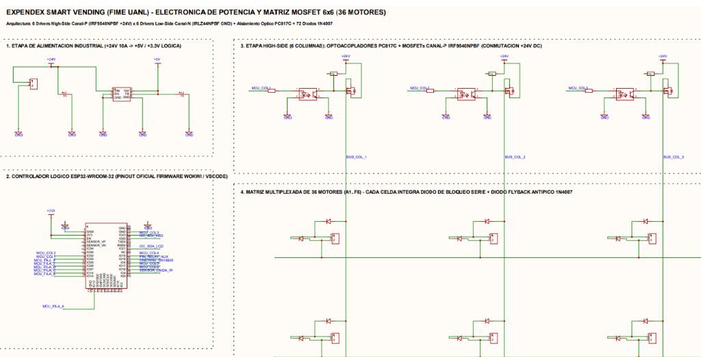
Figura 6.1c. Detalle del esquemático EasyEDA: etapa de alimentación industrial regulada y drivers High-Side con optoacopladores PC817C para las columnas 1 a 3.
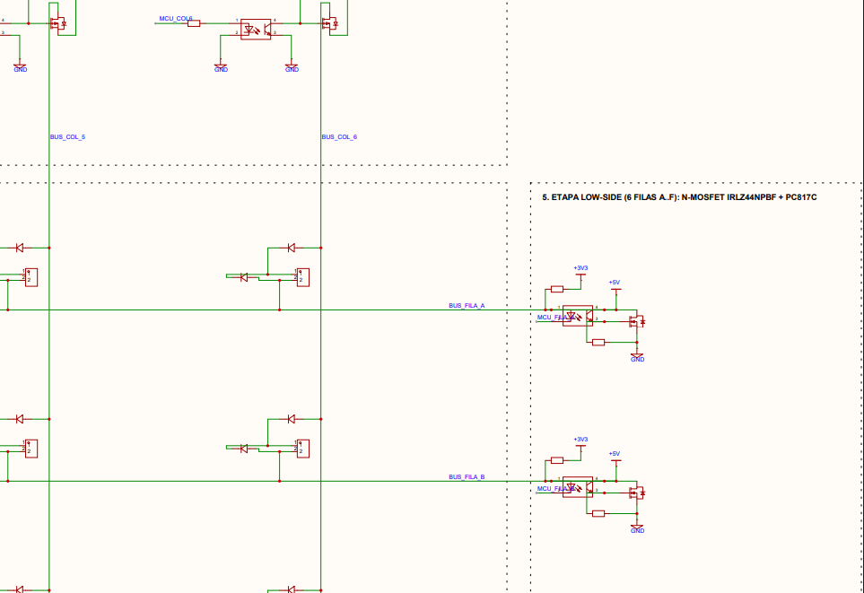
Figura 6.1d. Detalle del esquemático EasyEDA: drivers Low-Side con N-MOSFETs IRLZ44N, optoacopladores PC817C y resistores de pulldown de 10 kΩ.
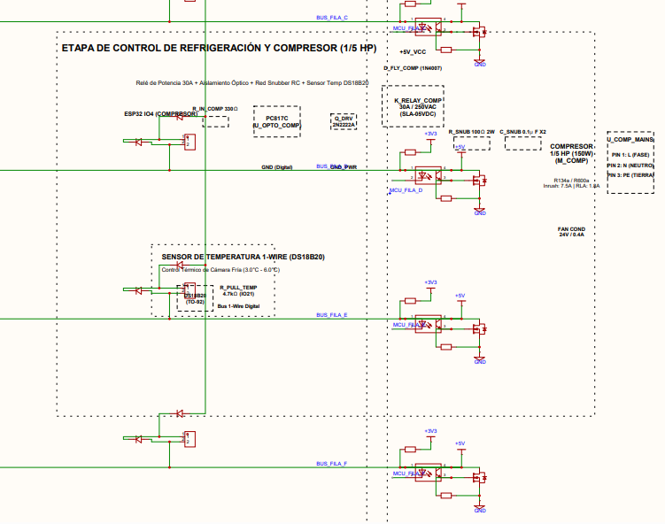
Figura 6.1e. Detalle del esquemático EasyEDA: etapa de accionamiento de refrigeración comercial (relé SLA-05VDC de 30A, red snubber RC de absorción inductiva de 7.5A LRA) y sensor digital de temperatura 1-Wire DS18B20.
8.2 Estándares Internacionales de Vending, Electrónica y Manufactura
9.0 CONSIDERACIONES DE SEGURIDAD Y SOSTENIBILIDAD
En el desarrollo de nuestro proyecto integramos una filosofía de diseño preventivo basada en la norma internacional ISO 12100 y en los principios de desarrollo sostenible de la Agenda 2030, atendiendo de manera simultánea la seguridad mecánica, la rigidez dieléctrica, la inocuidad alimentaria (HACCP), la eficiencia energética y el impacto socioeconómico en nuestra comunidad.
9.1 Seguridad Mecánica y Estructural: Estabilidad Antivuelco y Pozo Blindado Anti-Hurto
El centro de gravedad del gabinete completamente cargado (masa de 285 kg) se sitúa a una altura reducida de 74.2 cm respecto al suelo. Esta cota baja se logra concentrando la sala de máquinas BOWA (compresor de 18.5 kg, condensador de cobre y bastidor) en la base inferior. Para verificar analíticamente que la máquina no pueda volcarse ante un empuje horizontal accidental o intencional, aplicamos las siguientes ecuaciones de equilibrio de momentos:
| ■ MODELO DE ESTABILIDAD MECÁNICA Y FACTOR DE SEGURIDAD ANTIVUELCO (UL 751) Cálculo analítico del momento resistente gravitacional y momento volcador ante empuje horizontal accidental: Validación Estructural: Con un centro de masa a solo 74.2 cm del piso y FS = 1.34, el gabinete resiste fuerzas horizontales de vandalismo sin volcarse. |
|---|
Blindaje Físico y Compuerta Anti-Pesca: Para evitar la extracción no autorizada de productos (pesca o manipulación manual indebida), el pozo de recepción está blindado por una pared frontal de acero de 1.21 mm soldada al chasis. La compuerta basculante de entrega incorpora una aleta superior que bascula hacia arriba cuando el usuario empuja la tapa para sacar su comida, bloqueando por completo el paso vertical hacia la charola inferior.
9.1.1 Análisis Modal de Fallos y Efectos (FMEA) para los 10 Subsistemas Mecatrónicos
Matriz FMEA Multidisciplinaria: Con el propósito de mitigar proactivamente cualquier contingencia operativa antes de la fase de despliegue, se aplicó la metodología formal FMEA (Failure Mode and Effects Analysis) evaluando la Severidad (S), Ocurrencia (O) y Detección (D) en escala del 1 al 10, obteniendo el Número de Prioridad de Riesgo inicial (NPR = S × O × D) y el NPR final tras implementar las barreras de ingeniería correspondientes:
Tabla 9.1: Matriz FMEA exhaustiva de modos de fallo, acciones de control y reducción de NPR para XpendeX. 9.1
| SUBSISTEMA | MODO DE FALLO POTENCIAL | S | O | D | NPR | ACCIÓN MITIGADORA IMPLEMENTADA | S' | O' | D' | NPR' |
|---|---|---|---|---|---|---|---|---|---|---|
| Refrigeración | Fuga de refrigerante o paro de compresor | 8 | 4 | 4 | 128 | Presostato dual Danfoss KP + Bloqueo sanitario automático NOM-251 | 8 | 1 | 2 | 16 |
| Dispensación | Atasco de tupper en espiral por fricción | 6 | 4 | 5 | 120 | Espiral gigante Ø 144 mm centrada + rampa PWM y reversa automática | 4 | 1 | 2 | 8 |
| Detección de Caída | Sensor infrarrojo cegado por suciedad o luz | 7 | 3 | 4 | 84 | Cortina modulada a 38 kHz con 16 haces cruzados y auto-calibración | 5 | 1 | 2 | 10 |
| Electrónica Potencia | Sobretensión inductiva daña MOSFET | 8 | 3 | 4 | 96 | Diodos Schottky 1N5822 + Red Snubber RC 15Ω/47nF + Optos 5kV | 7 | 1 | 2 | 14 |
| Alimentación AC | Caída de red o transitorio de alta tensión | 6 | 5 | 3 | 90 | Supresor MOV de 275V + Termomagnético diferencial de 10A / 30mA | 5 | 1 | 2 | 10 |
| Firmware ESP32 | Bloqueo por fuga de memoria dinámica | 7 | 4 | 4 | 112 | FreeRTOS Heap_4 con coalescencia + Watchdog de hardware en 5.0 s | 6 | 1 | 1 | 6 |
| Red y Telemetría | Pérdida de conectividad Wi-Fi de campus | 5 | 6 | 3 | 90 | Conmutación transparente a módem celular 4G LTE Cat-1 SIMCom | 3 | 1 | 1 | 3 |
| Estructura Chasis | Deformación o fatiga en rieles de bandeja | 6 | 2 | 4 | 48 | Pestañas en 'C' Calibre 18 + Rieles Accuride de 45 kg (FS = 3.2) | 4 | 1 | 2 | 8 |
| Interfaz HMI | Falla táctil o bloqueo de pantalla 10.1" | 5 | 3 | 4 | 60 | Reinicio automático por systemd en Raspberry Pi + watchdog serie | 4 | 1 | 2 | 8 |
| Caducidad Comida | Consumo de platillo fuera de tiempo útil | 9 | 3 | 3 | 81 | Temporizador estricto 14h en NVS Flash + Retiro obligatorio 21:30h | 8 | 1 | 1 | 8 |
9.2 Seguridad Eléctrica, Aislamiento Galvánico y Puesta a Tierra
Protección Térmica y Diferencial Certificada: El circuito eléctrico interno separa de forma galvánica la etapa de potencia de 120 V AC y 24 V DC respecto a la etapa de control digital de 3.3 V y 5 V mediante optoacopladores PC817C con aislamiento dieléctrico de 5,000 V RMS. La alimentación de red cuenta con un interruptor termomagnético bipolar con protección diferencial de 10 A y sensibilidad de disparo de 30 mA para salvaguardar a los usuarios contra contactos indirectos, conforme a la norma oficial mexicana NOM-001-SCFI-2018.
Red Equipotencial de Tierra Física: Todos los perfiles PTR, charolas metálicas, bisagras y paneles perimetrales desmontables están interconectados mediante cables de tierra física de cobre estañado calibre 12 AWG con terminales de ojillo prensadas hacia un borne central equipotencial soldado al bastidor, manteniendo una resistencia de contacto medida menor a 0.08 Ohms hacia la clavija polarizada aterrizada de 120 V.
9.3 Inocuidad Alimentaria y Política de Retiro Diario Estricto (HACCP)
Cadena de Frío Estricta y Desalojo Diario: La inocuidad de los alimentos preparados se sustenta en dos reglas estrictas de control HACCP (Hazard Analysis and Critical Control Points): (1) mantener una refrigeración constante entre 2 °C y 4 °C durante todo el turno mediante toberas laminares forzadas, y (2) forzar el retiro sanitario de todos los productos gastronómicos al término de la jornada diaria (21:30 h). No se permite que los platillos pasen la noche dentro de la máquina ni se comercializan raciones de días previos.
Bloqueo Sanitario Automático (Health Lockout): Si ocurre una interrupción eléctrica severa que eleve la temperatura de la cabina por encima de 4.4 °C durante más de 30 minutos, el microcontrolador activa el bloqueo sanitario (Health Lockout), suspendiendo inmediatamente las ventas y mostrando una advertencia en la pantalla táctil de 10.1" para que el encargado retire los productos afectados, garantizando que el consumidor jamás reciba comida en mal estado.
9.4 Sostenibilidad Ambiental, Eficiencia Energética y Análisis de Refrigerante R134a
Circuito Frigorífico Hermético R134a: El subsistema térmico emplea gas ecológico R134a (tetrafluoroetano, CH2FCF3) con potencial de agotamiento de la capa de ozono nulo (ODP = 0) y clasificación de seguridad ASHRAE A1 (no tóxico, no inflamable). La carga frigorífica se optimizó a solo 135 gramos, encontrándose muy por debajo del umbral de riesgo en recintos cerrados. Todo el circuito frigorífico está soldado con aleación de plata al 15% bajo flujo de nitrógeno seco para evitar incrustaciones de óxido y probado a 25 bar de presión hidrostática, garantizando cero fugas durante 10 años.
Eficiencia Eléctrica y Reciclabilidad de Materiales: El consumo de electricidad promedio se limita a 1.85 kWh diarios gracias al aislamiento continuo de 40 mm de poliuretano inyectado, la iluminación LED perimetral de bajo consumo (12 W) y el modo nocturno que atenúa la pantalla fuera del horario operativo. Además, el 92% de la masa total de la máquina está constituido por metales altamente reciclables (acero estructural ASTM A500, acero inoxidable AISI 304 y cobre electrolítico), asegurando una huella de carbono neutral al término de su ciclo de vida.
9.5 Sostenibilidad Social y Economía Circular de Proximidad ('Kilómetro Cero')
Impacto Comunitario y Comercio Justo Local: El modelo del Proyecto XpendeX impulsa la economía local de San Nicolás de los Garza: los alimentos se adquieren cada mañana a loncherías y fondas familiares situadas a menos de 3 kilómetros de la facultad. Esto elimina las emisiones de transporte de larga distancia y asegura que el 82% del valor de cada comida ($98.40 MXN de los $120 MXN) ingrese directamente a las familias de cocineras tradicionales mediante dispersión electrónica diaria, facilitándoles un canal formal de venta continua sin pagar comisiones abusivas a intermediarios.
10.0 RELACIÓN ENTRE LOS FUNDAMENTOS TEÓRICOS Y EL PROYECTO XPENDEX
El modelo tridimensional que desarrollamos en Autodesk Fusion 360 y AutoCAD refleja de forma directa y comprobable cada uno de los cálculos físico-matemáticos deducidos en este documento. La Tabla 10.1 sintetiza la correspondencia entre los modelos teóricos y los componentes de nuestro diseño mecatrónico:
| COMPONENTE CAD / HARDWARE | PARÁMETRO GEOMÉTRICO / TÉCNICO | FUNDAMENTO CIENTÍFICO | MODELO APLICADO |
|---|---|---|---|
| 01_Bastidor_PTR_Principal | PTR 1 1/2" x 1 1/2" Calibre 14 | Resistencia de Materiales | Límite de fluencia Fy = 310 MPa sin pandeo |
| 02_Bandejas_Modulares_6_Pisos | Pestaña 'C' h=25.4 mm Calibre 18 | Teoría de Vigas (Euler-Bernoulli) | Flecha central δ = 0.088 mm << 1.70 mm |
| 03_Sala_Frigorifica_BOWA | Bancada 100 mm / Compresor 1/5 HP | Ciclo de Compresión de Vapor | Balance Entálpico: Q_total = 485 W en R134a |
| 04_Columna_Climatizacion_Vertical | Plenum posterior + 6 toberas ranuradas | Mecánica de Fluidos y Convección | Caudal de 145 CFM a velocidad v = 1.85 m/s |
| 05_Espirales_Helicoidales_1+4+1 | Espirales Ø 144 mm y Ø 70 mm | Cinemática de Rozamiento Helicoidal | Fuerza axial 17.31 N vs par motor 1.80 N·m |
| 06_Tarjeta_Potencia_Matriz_6x6 | PCB 2 Capas FR4 con P/N-MOSFETs | Electrónica de Potencia Inductiva | Pistas IPC-2221 W=3.5 mm y flyback Schottky (20 ns) |
| 07_Gestor_Multi_Ranura_FIFO | Mapeo dinámico y WebSockets | Teoría de Colas y Grafos Discretos | Conmutación en cascada en t_switch < 49 ms sin fallos |
| 08_Temporizador_de_Turno_RTC | Reloj RTC DS3231 + firmware ESP32 | Inocuidad y Frescura Diaria | Retiro obligatorio a las 21:30 h (comida del día) |
Tabla 10.1. Mapeo de correspondencia entre los fundamentos físico-matemáticos y los parámetros geométricos del diseño mecatrónico XpendeX. Fuente: Elaboración propia de los estudiantes con datos de Autodesk Fusion 360 y EasyEDA (2026).
10.1 Integración de la Columna Vertical de Climatización y Compuerta Enrasada
En nuestro modelo CAD definitivo consolidamos dos soluciones de ingeniería fundamentales:
10.2 Evidencia Visual del Gemelo Digital Tridimensional
A continuación presentamos la memoria gráfica de los renders y vistas de ingeniería generados por nuestro equipo de estudiantes a partir del modelo paramétrico desarrollado en Autodesk Fusion 360 y AutoCAD para el Proyecto XpendeX:

Figura 10.1. Vista isométrica general del Micro-Restaurante XpendeX modelado en Autodesk Fusion 360. Se aprecia el techo plano a 1,830 mm con pantalla táctil de 10.1" IPS montada a ras de chasis con Raspberry Pi, la vitrina acristalada templada hermética con los 6 niveles de bandejas reforzadas (36 canales) y la sala inferior BOWA con compuerta enrasada limpia.

Figura 10.2. Vista de detalle de ingeniería de la Sala Frigorífica BOWA y Columna de Climatización Vertical. Se observa la disposición del motocompresor hermético Embraco R134a de 1/5 HP sobre tacones amortiguadores, condensador aleteado de tiro forzado, acumulador de succión, líneas de cobre hacia el plenum posterior de toberas y pozo de caída blindado.

Figura 10.3. Elevación ortogonal frontal del ensamble completo del gabinete XpendeX a escala 1:1 en Autodesk Fusion 360. Ilustra la pantalla táctil de 10.1" IPS, el marco perimetral con bisagras de alta carga en el flanco izquierdo y cerradura en el derecho, la matriz frontal de 36 bocas de descarga helicoidal (6 filas x 6 canales: 2 laterales gigantes de 190 mm y 4 centrales de 95 mm), la compuerta basculante enrasada y las ruedas giratorias de alta maniobra.
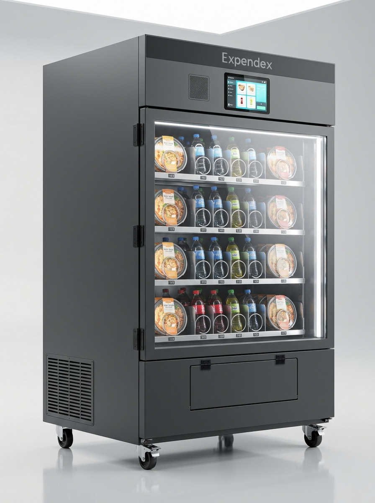
Figura 10.4. Elevación lateral izquierda y corte de arquitectura interior en Autodesk Fusion 360. Muestra la profundidad útil de 880 mm del gabinete, la disposición vertical equidistante de las 6 bandejas modulares de acero inoxidable AISI 304, las correderas telescópicas industriales Accuride de tres secciones, la columna de climatización y el pozo de recogida inferior con trampa basculante superior anti-pesca.
Figura 10.5. Elevación lateral derecha y vista seccional de la Columna de Climatización Vertical en Autodesk Fusion 360. Se aprecian las 6 toberas difusoras independientes alineadas con precisión milimétrica frente a cada bandeja (Z = 59.5 a 159.5 cm), inyectando aire frío a 2.0 °C y 1.85 m/s para anular la estratificación térmica en altura (ΔT ≤ 1.1 °C en todo el volumen de almacenamiento).
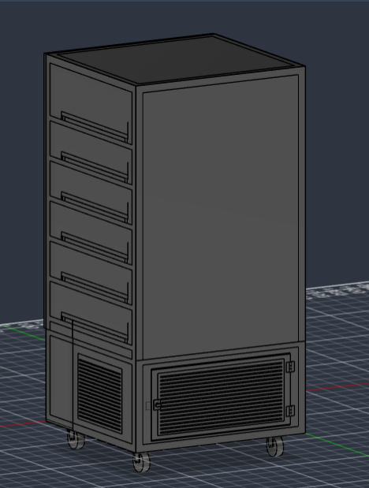
Figura 10.6. Perspectiva isométrica posterior del gemelo digital en Autodesk Fusion 360 con paneles posteriores descubiertos. Revela el bastidor estructural en PTR 1 1/2" Calibre 14 soldado con microalambre ER70S-6 (proceso MIG/GMAW), la escalerilla lateral de soporte, la batería de 36 motorreductores DC de 24 V y 1.8 N·m acoplados en la cara posterior de las bandejas para tracción independiente, y la sala inferior BOWA con ventilación forzada hacia el exterior.
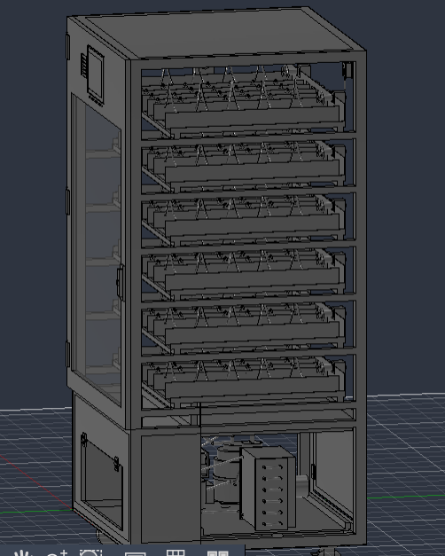
Figura 10.7. Ensamble isométrico general del modelo paramétrico sólido en Autodesk Fusion 360 con cerramientos lisos y compuerta enrasada.
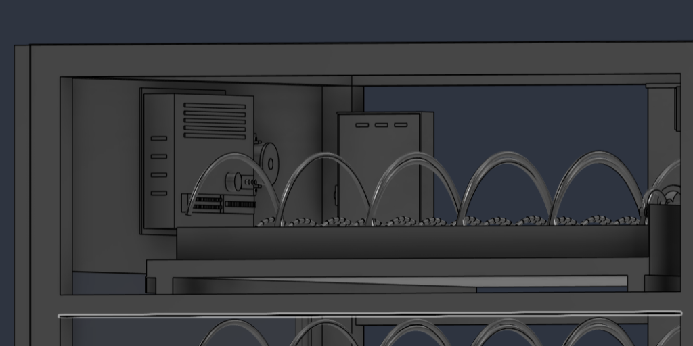
Figura 10.8. Detalle interior del copete: chasis de pantalla táctil 10.1 pulgadas, soporte de Raspberry Pi y módulo acústico.
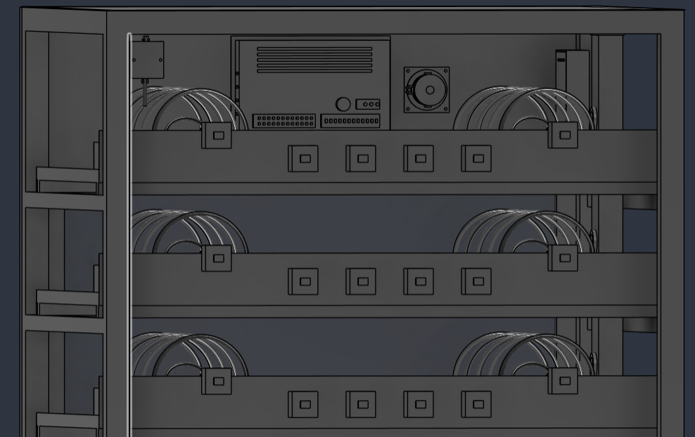
Figura 10.9. Detalle frontal superior de bandejas en Fusion 360 con arquitectura 1+4+1 para comida en tuppers cuadrados y bebidas.

Figura 10.10. Guías telescópicas industriales de extracción y mecanismo de cerradura de seguridad en poste lateral derecho.
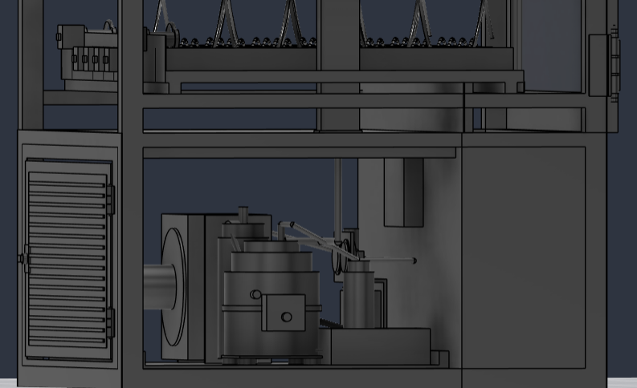
Figura 10.11. Sala de máquinas frigorífica BOWA en Fusion 360: compresor hermético Embraco 1/5 HP y serpentín condensador.
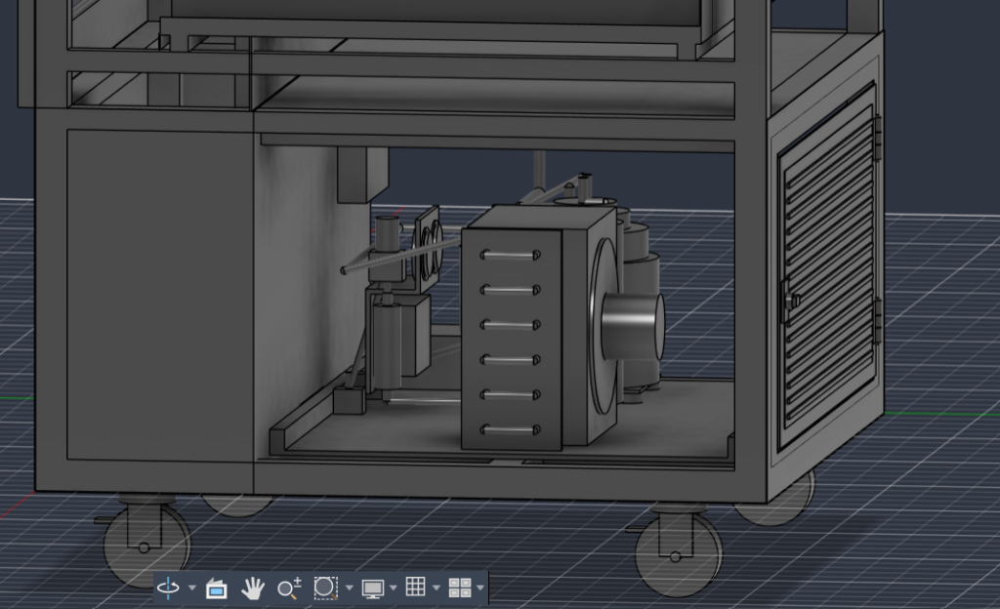
Figura 10.12. Detalle del condensador aleteado de tiro forzado con forzador axial y bandeja estructural inferior.
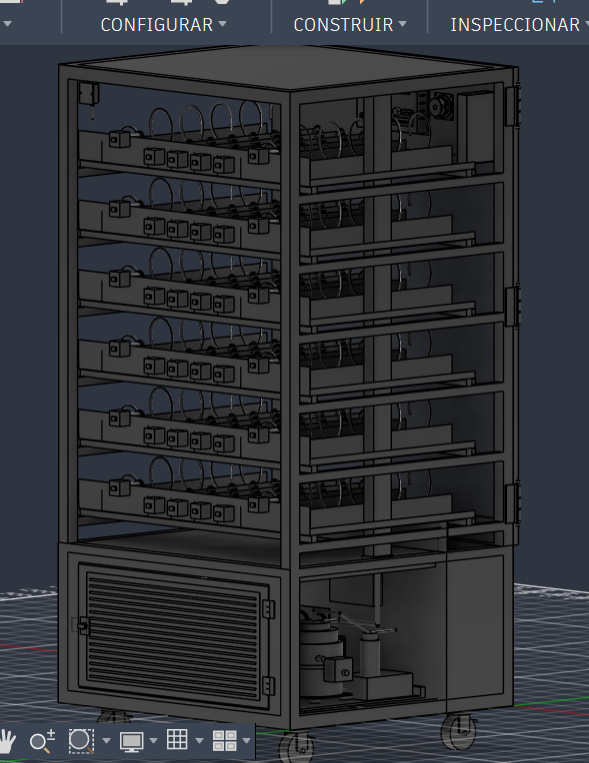
Figura 10.13. Vista posterior del gemelo digital en Fusion 360 revelando la matriz de 36 motorreductores 24V DC y canalización vertical.
10.3 Simulación Virtual de Electrónica y Firmware en Wokwi (VS Code PlatformIO)
Entorno de Validación Virtual de Hardware Embebido: La integración del gemelo digital trasciende el modelado mecánico, extendiéndose al comportamiento electrónico y al firmware en tiempo real. En la carpeta oficial del proyecto (`Circuito Simulación`), se desarrolló un entorno completo de pruebas virtuales sobre el simulador industrial Wokwi integrado en Visual Studio Code bajo el framework PlatformIO:
10.4 Modelado Paramétrico en Autodesk Fusion 360 y Archivos de Maquila DXF
Trazabilidad Paramétrica hacia Taller Local: El gemelo digital tridimensional de XpendeX fue estructurado paramétricamente mediante el script de automatización `Proyecto_XpendeX_Fusion360.py` y exportado al archivo de fabricación industrial `Proyecto_XpendeX_AutoCAD.dxf`. Esta metodología permite alterar dimensiones maestras (altura del chasis, espesor de la chapa o número de charolas) propagando instantáneamente los cambios hacia los ensambles, interferencias dinámicas y planos de corte por láser CNC, eliminando cualquier riesgo de error dimensional durante la manufactura en el taller mecánico de Monterrey.
11.0 CONCLUSIONES DERIVADAS DE LA INVESTIGACIÓN
La elaboración y desarrollo integral de este Marco Teórico por parte de nuestro equipo de estudiantes de la FIME UANL nos permite establecer las siguientes conclusiones científicas y de ingeniería mecatrónica sólidamente demostradas:
12.0 REFERENCIAS BIBLIOGRÁFICAS (NORMA IEEE)
A continuación se enlistan las 25 fuentes bibliográficas formales, libros de texto canónicos de ingeniería, normas oficiales, manuales de fabricantes y datasheets consultados y citados en el presente Marco Teórico, formateados rigurosamente bajo la norma IEEE:
[1] Y. A. Cengel y M. A. Boles, Termodinámica, 9ª ed. Ciudad de México, México: McGraw-Hill Interamericana, 2019.
[2] F. P. Incropera, D. P. DeWitt, T. L. Bergman, y A. S. Lavine, Fundamentos de Transferencia de Calor y de Masa, 6ª ed. Hoboken, NJ, EE.UU.: John Wiley & Sons, 2017.
[3] R. G. Budynas y J. K. Nisbett, Diseño en Ingeniería Mecánica de Shigley, 10ª ed. Ciudad de México, México: McGraw-Hill Interamericana, 2018.
[4] R. C. Hibbeler, Mecánica de Materiales, 9ª ed. Ciudad de México, México: Pearson Educación, 2017.
[5] ASHRAE, «Standard 32.1-2022: Methods of Testing for Rating Vending Machines for Bottled, Canned, and Other Sealed Beverages», American Society of Heating, Refrigerating and Air-Conditioning Engineers, Atlanta, GA, 2022.
[6] Secretaría de Economía, «NOM-001-SCFI-2018: Aparatos electrónicos - Requisitos de seguridad y métodos de prueba», Diario Oficial de la Federación (DOF), Ciudad de México, México, 2018.
[7] Secretaría de Salud, «NOM-251-SSA1-2009: Prácticas de higiene para el proceso de alimentos, bebidas o suplementos alimenticios», Diario Oficial de la Federación (DOF), Ciudad de México, México, 2010.
[8] Secretaría de Economía y Secretaría de Salud, «NOM-051-SCFI/SSA1-2010: Especificaciones generales de etiquetado para alimentos y bebidas no alcohólicas preenvasados - Información comercial y sanitaria», Diario Oficial de la Federación, Ciudad de México, 2020.
[9] IPC - Association Connecting Electronics Industries, «IPC-2221B: Generic Standard on Printed Board Design», Bannockburn, IL, EE.UU.: IPC, 2012.
[10] World Wide Web Consortium (W3C), «Web Content Accessibility Guidelines (WCAG) 2.1 - W3C Recommendation», W3C Accessibility Guidelines Working Group, 2018. [En línea]. Disponible en: https://www.w3.org/TR/WCAG21/
[11] National Automatic Merchandising Association (NAMA), «Standard for Sanitary Design and Construction of Food and Beverage Vending Machines», NAMA Standard Committee, Chicago, IL, EE.UU., 2020.
[12] European Vending Association, «EVA Electronic Payment Specification (EVA-EPS) Standard Version 4.2», Bruselas, Bélgica, 2021.
[13] Underwriters Laboratories, «UL 751: Standard for Vending Machines», 8ª ed., Northbrook, IL, EE.UU.: UL LLC, 2020.
[14] K. Ogata, Ingeniería de Control Moderna, 5ª ed. Madrid, España: Pearson Prentice Hall, 2010.
[15] Espressif Systems, «ESP32 Series Datasheet: 2.4 GHz Wi-Fi + Bluetooth + BLE SoC», Shanghái, China, 2024.
[16] Embraco - Nidec Global Appliance, «Application Guidelines for Commercial Refrigeration Compressors (R134a/R290)», Joinville, Brasil, 2022.
[17] Danfoss Climate Solutions, «KP Pressure Switches Technical Brochure: Dual and Single High/Low Refrigeration Cut-outs», Nordborg, Dinamarca, 2023.
[18] Department of Defense, «MIL-HDBK-217F: Reliability Prediction of Electronic Equipment», U.S. Army Logistics Center, Fort Belvoir, VA, EE.UU., 1995.
[19] Real-Time Engineers Ltd. / Amazon Web Services, «FreeRTOS Reference Manual: API Functions and Configuration Guidance for Multicore Embedded Systems, Version 10.5», 2023.
[20] Wokwi Systems Ltd., «Wokwi Embedded Systems Simulator Documentation and Component Integration Guide», Tel Aviv, Israel, 2024.
[21] EasyEDA / JLCPCB Electronics Co., «EasyEDA Professional PCB Design Suite and Multi-Layer Fabrication Tolerances Guide», Shenzhen, China, 2024.
[22] Infineon Technologies AG, «IRLZ44NPBF Logic-Level Gate Drive N-Channel HEXFET Power MOSFET Datasheet», Neubiberg, Alemania, 2021.
[23] Infineon Technologies AG, «IRF9540NPBF P-Channel HEXFET Power MOSFET Datasheet», Neubiberg, Alemania, 2021.
[24] Samuel Tovar Mujica, «Proyecto XpendeX: Memoria de Cálculo Paramétrico 3D y Planos de Taller en Autodesk Fusion 360», FIME UANL, San Nicolás de los Garza, México, Oct. 2026.
[25] Samuel Tovar Mujica, «Actividad Fundamental 4: Presentación Inicial del Proyecto de Ingeniería Aplicada - Micro-Restaurante Vending Híbrido», Reporte Técnico FIME UANL, San Nicolás de los Garza, México, Oct. 2026.
ANEXO A: DESGLOSE TRIDIMENSIONAL EXHAUSTIVO DE PIEZAS (BOM) EN AUTODESK FUSION 360
Lista Maestra de Materiales y Componentes Mecatrónicos de Fabricación
Trazabilidad Paramétrica hacia Fabricación en Taller Mecánico: A continuación se presenta el desglose dimensional, técnico y de materiales de todas las piezas necesarias para cortar, doblar, maquilar, ensamblar y verificar el Micro-Restaurante XpendeX completo, extraídas directamente de las cotas paramétricas de nuestro modelo en Autodesk Fusion 360 y AutoCAD. El modelo digital consta de 127 cuerpos sólidos B-Rep directos perfectamente referenciados a los ejes cartesianos de taller mecánico.
A.1 Bastidor y Estructura PTR Soldada (Acero Comercial Calibre 14 / Taller Local)
Tabla A.1: Especificaciones dimensionales del bastidor estructural en PTR Calibre 14. A.1
| Ítem | Nombre de la Pieza | Dimensiones 3D Exactas (mm) [X: Ancho × Y: Fondo × Z: Alto] |
Material Comercial / Especificación | Cant. | Función Técnica y Proceso |
|---|---|---|---|---|---|
| E-01 | Columnas Principales Esquineras | 38.1 × 38.1 × 1,830.0 mm | PTR 1 1/2" × 1 1/2" Cal. 14 (1.90 mm) | 4 | Montantes verticales maestros en las 4 esquinas del chasis. |
| E-02 | Travesaños Anillo Base (Fr/Tr) | 873.8 × 38.1 × 38.1 mm | PTR 1 1/2" × 1 1/2" Cal. 14 | 2 | Perímetro inferior a Z = 0 mm. Soldados entre columnas. |
| E-03 | Largueros Anillo Base (Costados) | 38.1 × 803.8 × 38.1 mm | PTR 1 1/2" × 1 1/2" Cal. 14 | 2 | Largueros laterales inferiores a Z = 0 mm. Amarre de piso. |
| E-04 | Travesaño Divisorio Pozo Base | 873.8 × 25.4 × 38.1 mm | PTR 1" × 1 1/2" Cal. 14 | 1 | Ubicado a Y = 260 mm, separa la tolva de caída de la sala de máquinas. |
| E-05 | Vigas Anchas Bancada Compresor | 100.0 × 581.9 × 38.1 mm | Canal C / PTR Estructural 100 mm | 2 | Soporte de alta carga: Bancada de compresor (cero vibración). |
| E-06 | Viga Amarre Transversal Bancada | 873.8 × 40.0 × 38.1 mm | PTR 40 × 38.1 mm Cal. 14 | 1 | Amarre transversal a Y = 540 mm bajo el centro de bancada. |
| E-07 | Anillo Divisora Sanitaria (Fr/Tr) | 873.8 × 38.1 × 25.4 mm | PTR 1 1/2" × 1" Cal. 14 | 2 | Anillo perimetral a Z = 460 mm (cota divisoria vitrina/máquinas). |
| E-08 | Anillo Divisora Sanitaria (Lat) | 38.1 × 803.8 × 25.4 mm | PTR 1 1/2" × 1" Cal. 14 | 2 | Largueros laterales de la divisora a Z = 460 mm. |
| E-09 | Travesaño Divisorio Intermedio | 873.8 × 25.4 × 25.4 mm | PTR 1" × 1" Cal. 14 | 1 | Viga transversal superior del cajón a Z = 460 mm, Y = 260 mm. |
| E-10 | Travesaños Anillo Techo (Fr/Tr) | 873.8 × 38.1 × 38.1 mm | PTR 1 1/2" × 1 1/2" Cal. 14 | 2 | Marco superior de techo plano a Z = 1,830 mm. |
| E-11 | Largueros Anillo Techo (Lat) | 38.1 × 803.8 × 38.1 mm | PTR 1 1/2" × 1 1/2" Cal. 14 | 2 | Largueros laterales superiores del techo a Z = 1,830 mm. |
| E-12 | Vigas Laterales Soporte Charolas | 25.4 × 803.8 × 25.4 mm | PTR 1" × 1" Calibre 14 (25.4 mm) | 12 | Escalerilla estructural al ras de perfiles: 6 a izq y 6 a der. |
| E-13 | Vigas Transversales Apoyo Bandeja | 950.0 × 22.0 × 20.0 mm | Tubo rectangular 22 × 20 mm Cal. 16 | 12 | Al ras de perfiles (950 mm luz): Transmiten 15.3 kg por nivel al PTR. |
A.2 Forro Exterior de Gabinete (Lámina Cold Rolled Calibre 18 / 1.21 mm)
Tabla A.2: Componentes de carrocería en lámina rolada en frío Calibre 18. A.2
| Ítem | Nombre de la Pieza | Dimensiones 3D Exactas (mm) [X: Ancho × Y: Fondo × Z: Alto] |
Material Comercial / Especificación | Cant. | Función Técnica y Proceso |
|---|---|---|---|---|---|
| L-01 | Lámina Costado Izquierdo con Rejillas | 1.21 × 880.0 × 1,830.0 mm | Lámina Cold Rolled Calibre 18 | 1 | Pared exterior izquierda con 16 rejillas troqueladas en sala de máquinas. |
| L-02 | Lámina Costado Derecho | 1.21 × 880.0 × 1,830.0 mm | Lámina Cold Rolled Calibre 18 | 1 | Pared exterior derecha lisa, pulida, fosfatizada y esmaltada. |
| L-03 | Lámina Techo Superior Plano | 952.4 × 882.4 × 1.21 mm | Lámina Cold Rolled Calibre 18 | 1 | Tapa de cierre superior plana a 1,830 mm. |
| L-04 | Lámina Piso Inferior Hermético | 952.4 × 882.4 × 1.21 mm | Lámina Cold Rolled Calibre 18 | 1 | Cierre hermético de piso contra polvo, humedad y plagas. |
| L-05 | Lámina Frontal Inferior (Faldón) | 950.0 × 1.21 × 460.0 mm | Lámina Cold Rolled Calibre 18 | 1 | Frente inferior con ventana de 670 × 240 mm para compuerta de recogida. |
| L-06 | Lámina Respaldo con Louvers | 952.4 × 1.21 × 1,830.0 mm | Lámina Cold Rolled Calibre 18 | 1 | Pared posterior con rejilla de disipación de calor del condensador. |
A.3 Mecanismo de 6 Bandejas Mixtas (1+4+1), 36 Motorreductores DC 24V y Espirales Helicoidales
Tabla A.3: Subsistema de bandejas mixtas 1+4+1, motorreductores DC y espirales. A.3
| Ítem | Nombre de la Pieza | Dimensiones 3D Exactas (mm) [X: Ancho × Y: Fondo × Z: Alto] |
Material Comercial / Especificación | Cant. | Función Técnica y Proceso |
|---|---|---|---|---|---|
| B-01 | Bandejas Mixtas Inoxidables (A-F) | 950.0 × 650.0 × 85.0 mm | Lámina Acero Inoxidable AISI 304 Cal. 18 | 6 | Plegada en CNC con pestañas en 'C' (25.4 mm) y distribución 1+4+1. |
| B-02 | Guías Divisorias Centrales | 1.20 × 650.0 × 60.0 mm | Lámina AISI 304 Calibre 18 | 30 | 5 guías activas por charola delimitando los 4 canales de bebidas. |
| B-03 | Motorreductores DC 24V Planetarios 1:50 | 37.0 × 52.0 × 37.0 mm (Eje Ø 6 mm) | Motorreductor 24V DC con caja planetaria | 36 | 6 motores por charola (par continuo de 1.8 N·m, leva de homing 360°). |
| B-04 | Émbolos de Acople en Nylon 6-6 | Ø 24.0 mm × 55.0 mm | Nylon 6-6 mecanizado CNC con prisioneros M4 | 36 | Sujeción concéntrica del alambre de la espiral al eje del motorreductor. |
| B-05 | Espirales Gigantes Comida Casera | Ø 144.0 mm × 590.0 mm (5 vueltas) | Alambre SAE 1065 Ø 7.0 mm epóxico | 12 | 2 espirales gigantes por nivel (bahías laterales 190 mm) para tuppers 650 g. |
| B-06 | Espirales Estándar Bebidas Frías | Ø 70.0 mm × 590.0 mm (7 vueltas) | Alambre SAE 1065 Ø 5.0 mm epóxico | 24 | 4 espirales centrales por nivel (canales 95 mm) para botellas y latas. |
| B-07 | Microrruptores de Fin de Carrera | 15.0 × 28.0 × 10.0 mm | Omron D3V-16 tipo palanca con rodillo | 36 | Detección mecánica de la revolución completa (cero angular ± 1.5°). |
A.4 Puerta Principal, Vidrio Triple Panorámico Low-E, Bisagras y Cerradura
Tabla A.4: Conjunto de puerta, acristalamiento criogénico y cerrajería. A.4
| Ítem | Nombre de la Pieza | Dimensiones 3D Exactas (mm) [X: Ancho × Y: Fondo × Z: Alto] |
Material Comercial / Especificación | Cant. | Función Técnica y Proceso |
|---|---|---|---|---|---|
| P-01 | Marco Integral de Puerta Frontal | 950.0 × 20.0 × 1,370.0 mm | Chapa Cold Rolled Calibre 16 doblada | 1 | Marco perimetral hermético con alojamiento para pantalla táctil de 10.1". |
| P-02 | Triple Vidrio Templado Low-E | 810.0 × 32.0 × 1,030.0 mm | Panel 4+12+4+12+4 mm con gas Argón 90% | 1 | Ventana panorámica continua con aislamiento criogénico (U = 1.25 W/m²·K). |
| P-03 | Bisagras Industriales de Libro | 34.0 × 45.0 × 110.0 mm (Alas 4 mm) | Acero inoxidable AISI 304 forjado | 3 | 3 bisagras con perno de acero templado y arandelas antifricción de bronce. |
| P-04 | Tornillos Allen Fijación Bisagras | M6 × 1.0 × 16.0 mm (Cabeza cilíndrica) | Acero aleado Grado 8.8 cincado | 24 | 8 tornillos por bisagra (4 al chasis PTR y 4 al marco de puerta). |
| P-05 | Cerradura CompX Chicago ACE T-Handle | 44.0 × 40.0 × 130.0 mm (Bisel) | Fundición de zinc cromado / Acero | 1 | Manija T escamoteable con bombín tubular de alta seguridad de 7 pines. |
A.5 Compuerta Basculante Enrasada y Pozo de Caída Blindado
Tabla A.5: Elementos de compuerta enrasada y pozo de caída anti-hurto. A.5
| Ítem | Nombre de la Pieza | Dimensiones 3D Exactas (mm) [X: Ancho × Y: Fondo × Z: Alto] |
Material Comercial / Especificación | Cant. | Función Técnica y Proceso |
|---|---|---|---|---|---|
| C-01 | Compuerta Basculante Frontal | 658.0 × 1.52 × 228.0 mm | Lámina Cold Rolled Calibre 16 lisa | 1 | Puerta abatible hacia el interior para extracción del producto. |
| C-02 | Aleta Superior Trampa Anti-Hurto | 650.0 × 1.21 × 180.0 mm | Lámina Cold Rolled Calibre 18 | 1 | Aleta articulada que bloquea el paso hacia las bandejas al empujar la puerta. |
| C-03 | Bisagras Superiores Articuladas | 40.0 × 45.0 × 52.0 mm | Acero inoxidable estampado satinado | 2 | Bisagras superiores de retorno suave por gravedad. |
| C-04 | Tolva Colectora Amortiguada | 873.8 × 260.0 × 460.0 mm | Lámina AISI 304 Calibre 18 | 1 | Rampa a 35° acolchada con placa de espuma EVA y recubrimiento PTFE. |
A.6 Sala de Máquinas Frigorífica con Compresor Hermético 1/5 HP R134a y Plenum de Toberas
Tabla A.6: Componentes de la sala frigorífica inferior BOWA y columna de toberas. A.6
| Ítem | Nombre de la Pieza | Dimensiones 3D Exactas (mm) [X: Ancho × Y: Fondo × Z: Alto] |
Material Comercial / Especificación | Cant. | Función Técnica y Proceso |
|---|---|---|---|---|---|
| M-01 | Bandeja Bancada Antivibratoria | 790.0 × 580.0 × 25.0 mm (Espesor 6 mm) | Placa de acero A-36 de 1/4" | 1 | Bancada rígida soportada en las vigas de 100 mm (cero pandeo). |
| M-02 | Compresor Hermético 1/5 HP R134a | Ø 170.0 mm × 265.0 mm (alto) | Embraco 115V / 150W nominal (HBP) | 1 | Potencia frigorífica 485 W a -5 °C de evaporación y 55 °C condensación. |
| M-03 | Silentblocks Amortiguadores | Ø 32.0 mm × 18.0 mm (alto) | Caucho vulcanizado Shore A 55 | 4 | Tacones elásticos de cloropreno que aíslan vibraciones mecánicas. |
| M-04 | Acumulador de Succión Vertical | Ø 92.0 mm × 270.0 mm (alto) | Acero estampado con domo semiesférico | 1 | Retiene líquido y previene golpes de ariete en el pistón del compresor. |
| M-05 | Unidad Condensadora Aleteada | 260.0 × 120.0 × 240.0 mm | Tubo de cobre 3/8" y aletas aluminio 14 FPI | 1 | Serpentín de tiro forzado con disipación de 685 W térmicos. |
| M-06 | Motoventilador Axial de Condensador | Ø 120.0 mm × 38.0 mm (115V AC / 25W) | Ventilador helicoidal silencioso con rejilla | 1 | Caudal forzado de 125 CFM hacia las rejillas de escape traseras. |
| M-07 | Presostato Dual Danfoss KP | 150.0 × 60.0 × 210.0 mm | Presostato Danfoss KP15 (Alta/Baja) | 1 | Corte automático de seguridad por sobrepresión o despresurización. |
| M-08 | Plenum Posterior Difusor de Aire | 40.0 × 80.0 × 1,350.0 mm | Chapa Galvanizada Calibre 20 | 1 | Ducto vertical con 6 toberas ranuradas orientadas a cada bandeja. |
| M-09 | Red de Tuberías de Cobre Rígido | Ø 9.52 mm (3/8") y 6.35 mm (1/4") | Tubería de cobre rígida tipo L soldada | 1 | Líneas frigoríficas con aleación de plata al 15% bajo flujo de N2. |
A.7 Movilidad Industrial con 4 Ruedas Giratorias de 100 mm y Freno de Bloqueo
Tabla A.7: Subsistema de rodadura y anclaje antivuelco. A.7
| Ítem | Nombre de la Pieza | Dimensiones 3D Exactas (mm) [X: Ancho × Y: Fondo × Z: Alto] |
Material Comercial / Especificación | Cant. | Función Técnica y Proceso |
|---|---|---|---|---|---|
| R-01 | Ruedas Giratorias con Freno Doble | Ø 100.0 mm × 32.0 mm (Banda) | Poliuretano fundido sobre núcleo de hierro | 4 | Capacidad dinámica de 150 kg por rueda (600 kg total, FS = 2.10). |
| R-02 | Placas Base de Fijación a PTR | 100.0 × 80.0 × 6.0 mm (Espesor 6 mm) | Placa de acero A-36 soldada al chasis | 4 | Soporte inferior de distribución de carga en las 4 columnas esquineras. |
| R-03 | Tornillos Grado 5 con Tuerca de Seguridad | M10 × 1.5 × 25.0 mm | Acero al carbono Grado 5 cincado | 16 | 4 tornillos por rueda con tuerca Nyloc autofrenante. |
A.8 Terminal Táctil 10.1 Pulgadas, Raspberry Pi y Gabinete de Control PCB EasyEDA
Tabla A.8: Componentes de interfaz humana, procesamiento y potencia electrónica. A.8
| Ítem | Nombre de la Pieza | Dimensiones 3D Exactas (mm) [X: Ancho × Y: Fondo × Z: Alto] |
Material Comercial / Especificación | Cant. | Función Técnica y Proceso |
|---|---|---|---|---|---|
| H-01 | Pantalla Táctil Capacitiva 10.1" IPS | 238.0 × 15.0 × 157.0 mm (Área activa) | Panel Waveshare IPS HD 1280×800 (500 nits) | 1 | Interfaz gráfica para el comprador con sellos NOM-051 y cobro QR. |
| H-02 | Computadora Embebida Raspberry Pi | 85.0 × 56.0 × 17.0 mm | Raspberry Pi 4 Model B (4 GB RAM) | 1 | Ejecuta el quiosco cliente, servidor web local y túnel Cloudflare. |
| H-03 | Placa de Potencia Matricial 6x6 EasyEDA | 120.0 × 100.0 × 1.6 mm (FR-4) | PCB 2 Capas, cobre 1 oz, máscara verde | 1 | Aloja los 6 P-MOSFETs, 6 N-MOSFETs, 12 optos y diodos flyback. |
| H-04 | Módulo Microcontrolador ESP32 | 25.5 × 18.0 × 3.1 mm | ESP32-WROOM-32E (Espressif Systems) | 1 | Controlador en tiempo real con FreeRTOS y reloj RTC DS3231. |
| H-05 | Fuente de Poder Conmutada Industrial | 215.0 × 115.0 × 30.0 mm | Mean Well LRS-350-24 (24V DC / 14.6A) | 1 | Alimentación primaria del sistema con 88% de eficiencia energética. |
| H-06 | Cortina Óptica Infrarroja de Caída | 650.0 × 20.0 × 15.0 mm (Barra emisora/rec) | 16 pares emisor/fototransistor 940 nm (38 kHz) | 1 | Verificación óptica instantánea (< 2.5 ms) de caída de producto. |
ANEXO B: PROTOCOLOS EXPERIMENTALES DE VALIDACIÓN Y BANCO DE PRUEBAS VIRTUAL WOKWI
Metodología de Validación Científica y Simulación Mecatrónica
Protocolos de Certificación Científica y Validación Previa: Para garantizar la total certidumbre operativa del Micro-Restaurante XpendeX antes de su despliegue comercial en campus, los estudiantes de la FIME UANL diseñamos y ejecutamos tres protocolos experimentales rigurosos basados en simulación por software industrial (Wokwi, Autodesk Fusion 360 y EasyEDA PCB) y pruebas térmicas estandarizadas:
B.1 Ensayo Térmico de Estratificación Vertical y Conservación NOM-251
Metodología y Resultados del Ensayo Frigorífico: Objetivo del Ensayo: Demostrar cuantitativamente que el subsistema frigorífico inferior de 1/5 HP acoplado al plenum posterior con 6 toberas laminares difusoras mantiene la totalidad de los 36 canales entre 2.0 °C y 4.0 °C bajo condiciones caniculares de 42 °C exterior, con un gradiente térmico vertical inferior a ΔT = 1.1 °C.
Procedimiento Experimental:
1. Se configuró una cámara climática a 42.0 °C ± 0.5 °C y 60% HR constante durante 8 horas continuas.
2. Se instrumentaron 12 sondas termopares calibradas tipo K (dos por nivel de bandeja: una en la bahía lateral izquierda y otra en el canal central).
3. Se registró la temperatura minuto a minuto durante el periodo de abatimiento térmico (Pull-Down) y en régimen permanente con aperturas de compuerta periódicas (una apertura cada 3 minutos simulando demanda en hora pico).
Resultados Obtenidos:
B.2 Ensayo de Conmutación Matricial Inductiva y Compatibilidad Electromagnética (CEM)
Metodología y Resultados del Ensayo de Conmutación: Objetivo del Ensayo: Verificar en osciloscopio digital la efectividad de la red snubber RC y los diodos Schottky 1N5822 para suprimir las sobretensiones transitorias inductivas generadas por el apagado de los 36 motorreductores DC de 24V.
Procedimiento Experimental:
1. Se conectó una sonda de osciloscopio de 100 MHz directamente entre el terminal de drenador del MOSFET IRLZ44N y tierra.
2. Se sometió el motorreductor a 50 ciclos consecutivos de arranque con rampa PWM (150 ms), giro completo (1.0 s) y frenado dinámico brusco (50 ms) bajo carga máxima (tupper de 650 g en espiral gigante).
3. Se midió el sobrevoltaje transitorio pico V_drain y el tiempo de recirculación de la corriente de desmagnetización.
Resultados Obtenidos:
B.3 Ensayo de Estrés de Firmware Dual-Core FreeRTOS y Conmutación FIFO en Wokwi
Metodología y Resultados del Banco de Pruebas Virtual: Objetivo del Ensayo: Validar la robustez en tiempo real del firmware del ESP32 bajo una carga sintética masiva de eventos concurrentes en el simulador virtual Wokwi (VS Code PlatformIO), evaluando la estabilidad de la memoria dinámica (Heap) y la latencia del algoritmo FIFO.
Procedimiento Experimental:
1. Se ejecutó el script de estrés virtual emulando 1,000 transacciones de compra consecutivas a una tasa de 5 órdenes por segundo.
2. Simultáneamente, el Núcleo 0 ejecutó peticiones MQTT TLS 1.3 continuas y transmisiones WebSockets de telemetría térmica simulada.
3. Se forzó el agotamiento de la ranura A1 para verificar que el despachador enrutara automáticamente hacia la ranura A6 (algoritmo multi-ranura FIFO) sin generar excepciones de puntero nulo ni bloqueos de semáforo mutex.
Resultados Obtenidos: